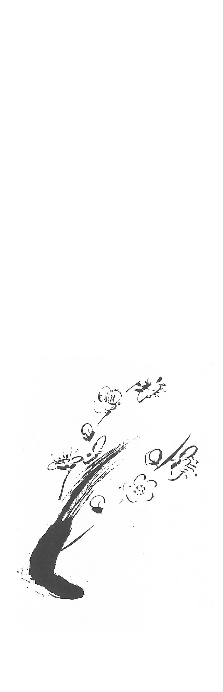

| 21世紀を救う宗教: 現代社会を生き抜くための親鸞・蓮如の教え (22世紀アート) | |
| 紅楳 三男丸 | |
| 22nd CENTURY ART (2019) | |
第一章 生活の中の仏教と迷信
お仏壇はなぜ金ピカ
お仏壇はなぜ金ピカなのですか？
という質問を受けました。そういえば、国宝といわれている仏像なども、ほとんどが金色ですね。私は、ざっとこんな風に答えました。
「仏壇の多くは金箔を使っている物が多いのですが、その場合、金は変らない物としての代表なのです。金は色が変らない、価値が変らない物です。その反対に私たちや、私たちの身の回りのものは変るものが多いですね......」
と前置きして、諸行無常の話をしました。百人一首のなかで、小野小町が「花の色はうつりにけりないたずらに、我身世にふるながめせしまに」という歌を残していること。そして、その歌は絶世の美女であっても一夜一夜に容色は衰えてゆく事を歎き、この世のものは変ってゆくことを訴えていることなどです。
よく考えてみると、私も一人で生れ、一人で年を取り老いてきました。そして病気になり、一人で死んでゆくという変り方をするでしょう。だから変らない真実のもの、ということで金が好まれるのです。仏壇や仏様が金箔で飾られているのはざっとこんな考え方からです......と。
ところが、私達は変らないものに心を執られずに、変ってゆくものに執着する傾向がありませんか。男女の容色、経済、流行、世相など十年もしない内に変ってゆくものに執われている自分に気がつきませんか。このことが、迷いや苦悩の始まりだと知ることが大事です。変るものに心を執われていては落ちつくということはありませんね。心や姿がコロコロと変る人が頼りにならないと同じことですね。
露天風呂
私の住んでいる大分県は、温泉の数と量が多いことで知られています。特に別府市は有名です。又、となり町の湯布院（ゆふいん）も村おこしブームに乗った為か、すごい人気です。温泉があるという事も人気の一因にあると思います。
温泉ブームはなぜか、ここ数年続いています。私自身も、とても温泉が好きです。ですから、若者たちと共に露天風呂を探しては楽しんでいます。そんなある日の露天風呂での話です。
「温泉、特に露天風呂はなぜ快適なのかなあ」
「何んとなく解放感があるからでしょう」
「そして、人間には本能的に野性に帰りたいという願望もありますからね」
「なるほどね。上を見ると星がみえるし、まわりは大きな杉の木がいっぱいだしね」
「今の仕事は神経がつかれますからね。高いビル、車、コンピューター。それに学歴、リストラ、単身赴任とさまざまですからねェ」
「それに加えて不景気、ローンがあるからな」
「きっと、癒（いや）されているんですよ。温泉で」
ざっと、こんな話や結論が出ました。なるほど、私たちは知らない間に色々な束縛やプレッシャーを受けているのかも知れません。疲れ果てている私たちは自然に露天風呂などを求めているような気がします。温泉ブームも現代のこのような下地があるとすれば、少しずつ、私たちの心の逃場も少なくなり始めているように感じます。
人間は元々、死を恐れています。そして見えてこない運命も恐れています。これが宗教が起こる原点です。ビクビクしながら生きている私たちの心の一時的な逃場に大半の宗教が信者獲得や布教のため存在しています。しかし、その様な宗教では逃げられないほど現在の仕事のプレッシャーやローンなどは重すぎるため、悩みは深刻です。一時的な逃場を与えてくれる宗教より、その悩みを越えてゆく本格的な宗教がこれからは必要だとは思いませんか。
露天風呂の暖い、ぬくもりのある湯しぶきを肩に浴びながら、そんな事を考えました。また温泉ブームについての語らいは、新しい心のステップにもなり、心の奥までくつろげる一幕でもありました。
責任転嫁と、たたり
都合の悪いことを嫁のせいにする、という事から責任転嫁という言葉が生れました。今では、そんなことで泣き寝入りするような婦人は少なくなりました。しかしながら昔と同じように、随分、責任転嫁をし続けていることがあります。事故や病気を霊のたたりとして、そのせいにするのがそのよい例です。あなたは今までに、
「ご先祖の霊が、ついています」
など言われた事はありませんか。だれでもそんな時、不安になって眠れなくなったりするものです。その時に責任転嫁という言葉を思い起してみましょう。
病気や事故の元凶を、ご先祖や霊に責任転嫁していないか、という事です。私たちは、見かけによらず弱い人間ですから、不幸や事故の原因を他に求める傾向があります。他に求める気持ちは良く理解できます。しかし、それで何が変るのでしょうか。罪もない先祖や水子を不幸の元祖にして、自分だけが良い子でという考えは、いかがなものでしょうか。あまりにも私自身が問題になっていません。これが私たち日本人的なやり方とも言えますが、宗教が責任転嫁をしては困りますね。
仏教の教えは、自分自身が問題になるのです。そして、私の苦しみや、悲しみの元凶は、自分自身への執着からと指摘します。執着するのは、煩悩、つまり欲望があるからだと説きます。世界を、自然を、己の命を正しく見よ。自分の欲望は、つきつめれば自分中心的な考え方ではないかと。それで仏教の教えは、本当の幸福を求める人に対して、私自身の思いや欲望を否定することから出発点として始まります。ですから、執着心のある私、欲望や自己中心の私は、殺人的行為ですら他人のせいにしがちです。真実の宗教は、この事を問題にして、罪人とか悪人とかを私に意識させるのです。少し難しくなりましたが、これから本当の幸福の道が開かれてくるのです。他人の心のいたみをわかる人とは、こんな心の持ち方で生まれてくるものです。決して良い子的発想では育たないものです。
泣き寝入りするお嫁さんは少なくなったのに不幸や病気などを、目の見えない他のせいにする風潮は困ったものです。そんな事の繰り返しの人には、悩みや苦しみを越えてゆく「本当の幸福の道」は、用意されていません。
日本は仏教の国？
二月十五日は、今から約二千五百年前、インドでお釈迦さまが亡くなられた日です。また四月八日はお釈迦さまが誕生された日です。ところが両日とも、あまり私達は関心がありませんね。四月八日の日は一部で「花まつり」が行なわれるだけのようです。その逆にクリスマスなどは年末のせいなのか、イベントづくりが上手なのかは定かでありませんが、かなりの賑わいです。
外国の人が日本人に宗教のことを質問すると「無宗教」と答える人が多いそうです。しかし日本人の大半が仏教徒と一応なっていることを考えると、少し妙な気もします。だから、すべて宗教的なものに対して無関心かと申しますと、そうでもないのです。
たとえばお墓のことですが、苗字がすでに夫の苗字になっているが、実家の両親のお墓の守りをしてもよいか。又は死後、一緒に墓に入っても良いかなどの質問を受けます。日頃、宗教的なものには無関心なのに、ちょっとした人生の問題に当たると、とたんに悩んでしまうというのが現実のようです。
又、別の婦人のことですが、ある老人の後妻に来たが、将来先妻の骨が入っているお墓には一緒に入りたくないが......といった話も聞いた事があります。
この辺のトラブルの心情は私も日本人として、同じ人間として、よく理解できるのですが、「日本は仏教の国？」と疑われる所でもあるのです。
仏教では亡くなった人に法名をつけます。そしてお釈迦さまの教えによって一族になるということで釈（しゃく）の字を頭につけます。釈信浄とか釈尼妙信とかがその例です。その意のごとく死後は仏さまになるという事です。仏さまになるという仏教の教えでは、生前の種々の因縁やつながりとは一切無縁であることを特に強調するのです。聖徳太子は「世間虚仮」と言われ、私達が生きている世間はイツワリであり幻であると現世のことを否定するのです。
ここまで聞くと、法名とは（一部では戒名とも呼ぶ）お金を多くかけることでも、長いものをつけて戴くことが大事でもないことに気づくでしょう。ですから先ほどのお墓に入る、入りたくない、イヤだという意見は気持ちはよくわかります。でも、お墓や法名はその人間の気持ちを越えてゆく所に本当の宗教の役割があるのですよと教えてくれます。そこに本当の幸福（解脱）があるのですよ......と釈の字は訴えているのです。釈の字は、人の狭い心を変えてくれそうです。
さて二月十五日は仏教界では涅槃会と呼びます。毎年この日は精進料理で家族揃ってという具合にイキな日本人になりたいなあ。
暦
五月といえば、五月晴れとか、こいのぼり、八十八夜、茶つみを思わず連想してしまいます。この頃はゴールデンウィークとも呼び、海外旅行や家族づれで温泉という方も多いと思います。ただ、中にはカレンダーや暦を見ながら、この日は仏滅とか大安などと気にしている人もあろうと思います。それでアレコレ思って出発日などを迷っている人があれば、そんな人のために一言述べてみたいことがあります。
私たちは割合、暦などに小さな字で書いてあるものに振り回されてしまうことが多いですね。そのことで大きな損をすることもあるものです。鎌倉時代の有名な古典に吉田兼好作の「徒然草」という作品があります。その九十一段目に、
「吉凶は人によりて、日によらず」
という一節があります。つまり運や吉凶は日によるものではなく、その人の心がけや人柄によるというものです。あの「徒然草」の兼好法師の言葉ですから重みがありますね。
この言葉からも暦にかかれてある仏滅や大安に心や生活を左右されるのはバカげた事だと思います。しかし、常識だけで全てが解決しない所に人間生活の困難さがあることも事実です。
「友引」という日が暦にあります。この日にお葬式を避けましょうという風習があります。ところがこの風習は日本古来からのものではないということを聞き、興味を持ったので調べてみました。そうすると、友引という日にお葬式を避け始めたのは江戸時代の終り頃、つまり百五十年前頃からとのことです。私の推測では、寺小屋やその他の教育機関の発達ですべての人々が漢字を知り始めた事によるものだと思います。その字を「友を引く」と読んだことが発端だと思うからです。
暦は、もともと中国のものだといいます。私の史料によると「友引」とは、吉凶に関係ない日として中国では古来、「かけごと」を楽しむと記されています。現代の日本流に言えば「競馬場へ行こう」というニュアンスでしょう。それが国が変り、時代が変るとお葬式を避ける日に変化してしまった訳です。
学問をしたり、教育を受けることの利点はより深い真理の探究にあります。ことさら恐怖心や迷信を作ってゆくことではないのです。鎌倉時代の僧、兼好法師の「吉凶は人によりて日によらず」の言葉の重さをかみしめる昨今です。
弱り目に、たたり目
不運が重なることを「弱り目に、たたり目」と言います。同じ意味では「泣きっ面にハチ」とも言います。世の中には、次から次へと大変苦しい立場に立ったり、病気になったりしている人がいます。又、人にも話すことのできない苦しみを受けている方もいるでしょう。
ところで私は、昨春より体調をくずしていましたが夏の暑さにも耐え、やっと健康をとり戻しました。そこで好きなコスモスのスケッチや、ドライブにでも行こうと思っていた矢先、今度は流行性結膜炎という目の病気になりました。目がまっ赤で、本もテレビも見ることができません。おまけに外に出ると視力が落ちて疲れやすく、人には感染すると言われて落ち込みました。
まさに「弱り目に、たたり目」です。しかしこういった経験を通して人の弱い心や、病気で苦しんでいる人の心や、いじめられている人の心を知ることができます。
一方、この「弱り目に、たたり目」に、つけ込んでくる宗教もあります。それも原因を他のものに仕立て、それを除くために信仰や金が必要と説くものには問題があります。しっかりしていないと、いつの間にか私の心に入り込んでくるのです。それでは、いつまでたっても強い人間にはなれません。テレビでアフリカの草原の出来事を放映しています。その時、草食動物たちがいつも肉食動物たちに狙われているシーンをよく見ます。弱い動物たちはビクビクしているようです。これでは本当の心のやすらぎはやってきません。私たちもビクビクして逃げ回ってばかりでは、本当の弱者に成ってしまいます。他に責任をなすりつけながら逃げ腰の人生をやめることが、実は仏教的人生なのです。もうすぐ二十一世紀、これからの人生は仏教的人生を生きましょう。
お盆に思う
お盆は聞くところによると、おシャカさまの弟子・目蓮さまの母親が地獄に落ちていたということから始まったということです。なぜ彼女が地獄に落ちたかといえば、それは一途にわが子を思う心、自分の子供さえよかったらいいという、自分勝手な心が罪となったからとのことです。
ところが現在、これほど時代が進歩した今でも、このことと同じようなことがたくさんあるのにお気づきでしょうか。よりよい職業につくために、より有名な大学に入学させようとする教育ママやママゴンなどが問題となり、一部で批判されていることは、ご承知でしょう。
そして、今、話題になっている男女の産み分け法や、代理妻などをご存知でしょう。これもよりよい家庭生活のためにとのことですが、やはり、わがまま自分勝手の部類に属するでしょう。特に、このことは生命の誕生という、人類として一番大切なことだけに、真剣に考えてみる必要があると思います。
そうしますと、お盆とは、ご先祖さまを尊び、しのぶことだけが目的ではないことがわかります。お盆の始まりとなった目蓮さまの母親の心、つまり私さえよければ、私の子供さえよければ、の心を反省し、ふり返ってみるところに、本当のお盆の意味があると思います。
さて、男女の産み分け法や、遺伝子の組み替えなど科学、医学の進歩もすばらしいのですが、これでよいのかと思うものもあります。体外受精、クローン羊などですが、これらは次第にエスカレートしていくようです。
よりよいものを求める人間や社会にあって、これからさまざまな生命に関する問題が私の前に出てきそうです。安楽死の問題がその一つです。人とは何なのか、生命とはどうあるべきかを深く考えたいものです。本願寺八代目のご門主、蓮如上人は、「人は上がり上がりて、おちばを知らぬなり」と申されました。この言葉は、科学的視野からの考え方だけでなく、心の通った見方が必要ですよ。知らない内に科学を利用したエゴ丸出し人間になりますよと戒めています。そして、仏説ウラ盆経に説かれるお盆の教訓は、私たちに一つの答、つまり「おちば」を教えて下さっているのです。「落ち場」とは地獄ということではないでしょうか。もう少し考え方を進めてみましょう。
○ ● ○ ● ○
高校野球が甲子園で最も熱気を帯びる時といえば、やはりお盆の頃です。また一年中で最も電力を消費するのもお盆の頃ですね。お正月と同様、人口の大移動があり、陸・空の交通便が大混雑します。
さて、このお盆、正式な名称はウラボンと申します。インドではウラボンナという言葉で、意味は倒懸（とうけん）、さかさまということです。私の人生の見方が、さかさまですよ、という意だと思います。こうした立場から今一度、お盆という日本の代表的行事を、単に高校野球のテレビ観戦や休日を利用しての海外旅行にしない為、じっくり見直してみましょう。
お墓まいりなどして、ゆっくりと人生の本当の幸福について考えてみましょう。私たちは経済の豊かさ、健康、優秀な子供に恵まれる事などが最大の喜びであると思っています。経済の安定や豊かさを守るためには、生存競争に生き残ってゆかなければなりません。決して正直だけでは生き残れません。他の人から憎しみを持たれることだってあります。健康面では、病気になるとわかるのですが、健康で元気な人を見ると羨ましく、一瞬、恨みさえ浮んで来ます。子供の場合は、大学を出て有名な企業へ入社し、出世をしてほしいと願います。私はこうした自分中心的な願いや競争激化が〝いじめ〟の温床になっていると思っています。
また、すべての人が希望通りという訳ではなく、大半の人が夢の一片も持ち得ない状況が現代だと思います。純粋で優秀な若者たちは、必然的に大人の世界の壁にブチ当たります。その結果絶望して、新天地を求める放浪の民の如く新境地の宗教を求めていった原因は、この辺りにありそうです。
いずれにしても、自己中心的な欲望や願いは、十分、理解はできますが、現実的には社会に地獄を作って来たということを否定できません。こんな思いを原点に置くと、お盆の始まりとなったといわれる仏弟子・目蓮尊者の母親の説話が現実味をおびます。彼女は目蓮尊者が優秀だった為、仏弟子の中での出世を願い、心の底から彼を愛していたということです。その罪で地獄に落ちたというのが仏説ウラ盆経の説話です。ここでは現代、私たちが持っているごく平均的な思いや願いが、本当の幸福の道ではなく、地獄の種（苦しみの元）であると教えているのです。
私たちは、自分の考え方が〝さかさま〟になっているのではないか......と、もう一つの答から私自身を反省することが大事だと思います。それが、ウラボン、つまりお盆の最大の意義です。さあ、今年のお盆は、久しぶりにゆっくりして〝逆さ立ち〟でもしてみますかな。
ひとの話ばかり聞いていては
西洋の昔話を当時二才だった三男に読んであげていると、おもわず笑ってしまったお話がありました。
ある村の若者と、その父親の話です。二人は日頃から「ほしい、ほしい」と思っていた馬を買うことができました。二人の喜ぶ顔が浮かんできます。二人が馬を引いて町から村へと歩いていると、
「折角、馬を手に入れたのに、乗らずに二人とも歩いている、もったいない」
という声を聞きました。そこで二人は話し合い、父親が馬の背に乗り、子供が馬を引いて歩き始めました。
しばらく行くと人が、
「無慈悲な親もいるものだ。見てみろあの親子」
と言います。そこで父は子供に「今度はお前が乗れ」とすすめ、子供はそうしました。しばらくはよかったのですが、
「まあ、親不孝な子供もいるものだ、馬に子供が乗り、親に手綱を引かせるなんて」
との声。これを聞いた親子は、今度は二人とも馬に乗りました。村に近づいた頃、この二人を見た人々は、
「何と二人で馬に乗っているとは、馬がかわいそうだ」
と言いました。二人は、どうしたものかと真剣に考えた末、なんと馬を二人でかつぐことまで考え始めました。驚いたのは馬です。二人の家に着いた時、馬はすでに病気になっていて、家に帰ると同時に死んでしまいました。
この話、単なる他人の話には思えません。ふだん、私たちも迷信や習わしを聞いては、そっちへゆき、人がこう言うといっては又迷うではありませんか。
汗水たらして働いて買った馬を、一度も田畑の作業に使うことなく失ってしまったように、自分の信じる道がないということは愚かなことです。一度しかない、やり直しができない人生です。さきほどの昔話を他人の話と聞いては只の笑い話です。何の為に生きているのか、私の生きる道を明らかにしたいものです。
あなたは上品？ 下品？
仏教語の中で、これほど日常言葉に定着しているものはないと思われる言葉に上品と下品という二つがあります。美しい立派な会話や行動をする人を上品と呼び、その反対の人を下品な人と呼びます。
仏教では、これを上品（じょうぼん）、下品（げぼん）と呼び、その中間を中品（ちゅうぼん）といいます。観無量寿経という、とてもすばらしい経典に、アミダ仏が私たちを仏にするための九種類のアミダ仏の姿を説く所があります。これを九品仏（くぼんぶつ）といいます。つまり、上品に三種類、美しい立派な修行を私たちに要求します。中品にも三種類あり、中位の修行を要求し、たりない半分をアミダ仏の慈悲でカバーしようとします。下品にも三種類あり、下品上生、下品中生、下品下生と続きます。下品になりますと美しい修行は、できなくなります。私たちと良く似ていますね。でも、たりない事は仏が慈悲でカバーして下さいます。
最後の九番目は下品下生となります。この時、アミダ仏はこう説き明します。
「下品下生とは最も重い罪、つまり父母を殺すとか、他の殺生邪婬、悪口、二枚舌、むさぼりの心、嫉妬、愚痴などの行いをする人である。その為、心のやすらぎはなく、限りない苦しみを受けなければならない。しかし、その人がもし仏を念ずることができないなら、ただ口に阿弥陀仏のみ名を称えるがよい」（観無量寿経）と述べます。この文により、私たちがナモアミダ仏と称える念仏が意味深いという事を確信して下さると思います。つまり人間の多くは下品下生の罪人と教え、その悪人を救うということを少しも苦にしない姿で、君の為に私は立っているよと示しているのです。そうです。浄土真宗の本尊であるアミダ如来は立ちつくしておいでます。
ただ念仏だけで？ と疑問をもっていた方はこの深いアミダ仏の心に、考え方が改まったことでしょう。そして、ただ念仏で、本当の救いや、やすらぎが得られるという、日常の中の悟りこそ仏のネライでしょう。本音でしょう。浄土真宗を開いた親鸞聖人の最も尊敬していた天才僧、法然上人は、この下品下生の仏のことを「順彼仏願故」（これが阿弥陀仏の本心だ）と選択集（法然上人の主著）で述べています。つまりアミダ仏の慈悲がパワー全開した教えとも言えるでしょう。
さて、あなたは上品？ 下品？
三人寄れば
三人寄れば文殊（もんじゅ）の智慧という言葉があります。文殊とは智慧が秀れていたという文殊菩薩のことです。彼の超一流の智慧にちなんで現代科学水準で一流の自信作である福井県の高速増殖炉の原型炉に「もんじゅ」と名づけました。ところが最近ナトリウム漏れの事故を起し、日本中を恐怖に落し入れました。
この皮肉な出来事は科学の落し穴と言ってしまえば終りです。しかし人間の高慢さや、科学の現実をよく知ったことでした。さて話は変りますが、私達のような平凡な者が三人寄れば、こんな会話がよく花咲きます。
「今、テレビなどで、子供が親の老後をみる番組があるけど、他人ごとじゃありませんね。私のところなんか、私のめんどうをみてくれる子なんか一人もいないんですよ」
「あら、私のところなんか、しゅうとめがしっかりしていて、元気だから神経をつかうんですよ。同居なんて、とんでもない」
「へぇー、日頃は平和そうで何の悩みもない方ばかりだと思っていて、私だけが不幸だと思っていたけど、皆さんの話を聞いて心が開けたようよ。実は私の主人は養子なんだけど、お宅はいいわね、うらやましいわ。なんて言われていたけど、主人と私の両親の間で、苦労の連続だったのですよ」
三人寄れば文殊の智慧......ご婦人方が三人寄れば、グチの発表会にもなります。でも、そのことから、悩みの中にいるのは私一人ではない。すべての人が言えない苦しみを抱いて生きていることに気がつきます。
文殊の智慧が教えるものは、高慢になることでなく、人の本当の姿を知るということでしょう。
有無（うむ）を言わせず
ガンなどの重い病気で死の宣告を受けた人などが、よくその体験を書いて出版をされます。そんな本などを読むと、いつも不思議な気持ちになります。それは「あと寿命は一年ですよ」とか「あと三ヶ月ですよ」と、宣告されると普通は不幸のどん底になるはずです。ところが、本の著者は「不幸のどん底」から「この上もない幸福」を掴んでいることが多いのです。そして残り少ない寿命を全うしようとしています。こういう話を、只なにげなく読んでいると、本当に大切なものを見失ってしまう気がします。反対に、死の宣告を医者から受けていない私たちは「この上もない幸福」を掴んでいるか......という事です。
健康なものは「それなりに幸せ」です。来年の正月の同級会とか春の旅行、そしてゲートボール大会に胸をワクワクさせています。初孫の出産を待ち切れない人もいるでしょう。こんな私たちは「この上もなく幸福」ですから、この上もなく喜ばなくてはならないはずです。でも、こんな人にかぎって「それなりに幸せ」であって、悩みや不安で本当の幸福ではないことが多いのです。
全く逆だとは思いませんか。死を宣告された後、アミダ如来の慈悲を説く浄土真宗の教えを真剣に聞き、目ざめた人は多数います。そんな方々は、飛ぶ鳥に、朝の空気に、野花に大いなる慈愛の心を見せます。そして、朝の目ざめに「生かされている」と、大いに感謝もします。すばらしい人生を生きているのです。
反対に私たち、「それなりに幸せ組」は何かが邪魔をしているため、素晴らしい人生を送るチャンスをなくしている気がします。ズバリそれは、「有無を言う」事だと思います。私たちは「有る」と思い、その物に執着し、それを無くしたら「無い」といって悲しみ、歎きます。深く考えてみますと、私たちの悩みや苦しみは、○○が無いとか、△ △ が有るといったものが全てであることに気づきます。そして、○○も△ △ も価値が変ったり、老化をしたり、時には焼けたり、地震にあったりして形が変ったりします。こういう状況を諸行無常と呼ぶのです。形が変ってゆくものに、しがみついて悩んでいるのですから、本当の心のやすらぎとか悟りの境地とは全く遠く、救われようがありませんね。「生まれ変る」ためには、これを十分に身体で理解することが第一です。
このことから「有無を言わせず」という仏教語があります。有るとか無いなど言っていては、いつまでたってもダメですよ......と説明するのが仏教の基本的な立場です。しかし真実に「有無を離れる」という事は難かしいことです。哲人や聖人には理解できても凡人の私には少々無理があります。しかし、こんな弱気になっている私に一すじの光がさし込んできました。それは昭和四十三年、七十二才でこの世を去った中村久子さんの一生を知った事からです。
中村さんは、あるテレビ局の全国放送や出版物で、その生涯が紹介され、感動を呼びました。彼女こそ有無を離れ、心から念仏を喜んだ人です。満二才十ヶ月の時、両足を切断しなければならない突発性脱疽という病気になりました。飛騨の高山（岐阜県）の田舎町での生活は極度に苦しいものでした。そんな中、今度は両手の切断ということになりました。成長後は、学校にも行けず母子は自殺ばかり考える日々も数多くありました。しかし、そんな状況にありながら、一人でご飯を食べることや、針を使っての編物などを、無い手足を利用してすることを覚えました。娘ざかりの十九才の晩秋、久子さんは、生活のため見世物小屋入りしました。四肢無い娘は「だるま娘」として否応なく芸を演じたのでした。芸とは小さな頃から身につけた編物や字を書くことでした。口を上手につかうことがコツでした。そして結婚、出産と常識では考えられない人生を渡ってきました。そういった人生の中でアメリカからやってきたヘレン・ケラー女史とも面会し、励まされ、信仰の大切さも学びました。浄土真宗を開いた親鸞聖人の言葉が引用されている「歎異抄」（たんにしょう）という書物も教わりながら読む仏縁にもめぐまれました。次第に彼女は日本を代表する浄土真宗の信者となり各地で講演もするようになったのです。そんな折、書いた彼女の歌を紹介いたします。
ある ある ある
さわやかな
秋の朝
「タオル取ってちょうだい」
「おーい」と答える
良人がある
「ハーイ」という
娘がおる
歯をみがく
義歯の取り外し
かおを洗う
短いけれど
指のない
まるい
つよい手が
何でもしてくれる
断端に骨のない
やわらかい腕もある
何でもしてくれる
短い手もある
ある ある ある
みんなある
さわやかな
秋の朝
（中村 久子）
以上です。有る、無いに執着して、不満を言ったり、悩んだりしている自分が恥ずかしく思えます。目の前の幸福を見つけ出して「生かされている」ものを感謝できることが大切だと思います。
そんなに欲ばってどうするの。そして絶望して悩んでいるの。おかしいわ。あなたには幸福が一杯あるわ。仏さまからの賜りものよ。早く目をさまして。
彼女の声が聞こえそうです。
四苦八苦（しくはっく）
経済が少し低調のせいでしょうか、四苦八苦という仏教語が新聞などで日常的になりました。本来は人間の苦しみとその原因を、わかりやすく説明したものです。しかし日常では、汗水たらして非常に苦労している様子を、この仏教語はよく表しています。たとえば、
「バブル経済がはじけて、○○は四苦八苦している」
こんな使われ方がよい例です。
では四苦八苦とは、本来どういう風に理解したら一番意味深くなるのでしょう。少し説明します。まず四苦とは人の四種類ある代表的な苦しみのことです。① 生れる苦しみ② 老いてゆく苦しみ③ 病気になる苦しみ④ 死を恐れる苦しみ、以上です。つまり生・老・病・死です。この四つのことは大体理解できそうです。
続いて八苦です。⑤ 愛別離苦（妻、子供、夫など親しく愛しいものと別れたり、死に別れになる苦）⑥ 怨憎会苦・おんぞうえく（にくしみを持っている者たちが共に生きてゆかねばならぬ苦）⑦ 求不得苦・ぐふとっく（求めても求めても得ることのできない苦しみ）⑧ 五取蘊苦・ごしゅじょうく（① から⑧ までの苦しみによって苦しむ様子）
以上が、四苦八苦です。このように並べてみますと、なるほどと納得してしまいます。この苦の世界を越えよ......と四苦八苦は説こうとします。そのため、苦の原因をなお私たちにわかりやすく教えようとします。そこで、日本人の好きな算数を利用して、四苦を四九とし、４×９＝36 、八苦も八九として、８×９＝72 と計算します。最後に36 ＋72 ＝108 という数字をはじき出しました。この108 の数字で何を連想しますか？ そうです除夜の鐘です。百八の鐘です。この鐘は、煩悩（ぼんのう）、欲望の数だと言われています。
どうでしょうか。四苦八苦を分析したら百八の煩悩、欲望ということになりました。四苦八苦という苦しみの原因は煩悩、欲望ですよ、と教えているのです。そして、煩悩、欲望を離れたならば、四苦八苦は消えて、安楽になり悟りが開けますよ......と鐘は鳴っているのです。
仏教文化、日本文化も一考すれば、おもしろいですね。
のどぼとけ......私見
咽頭（のど）の少しとび出ている所を私たちは〝のどぼとけ〟と呼びます。何故〝のどぼとけ〟と呼ばれるのでしょうか。色々考えた結果、外国ではどの様に呼ぶのか調べてみました。英語ではアダムズ・アップルと呼ぶそうです。アダムとイブが神様の留守中に、りんごを食べていたところ、急に神様が帰って来たので、アダムが慌ててりんごを飲み込みました。その時の咽頭（のど）の形の事をアダムズ・アップルと名付けたことに由来するとのことです。
つまり、禁じられていたりんごを食べたという罪のことを強調しているものと思います。そして、罪を造る所とも解釈できます。なるほど、のどぼとけは声帯ですから、声なくして言葉や会話はありません。ところが言葉や会話は罪つくりの源でもあります。わが国においても、その件に関しては同様ですし、異論はありません。違いがあるといえば、呼び名に〝ほとけ〟が付いていることです。
私はこう考えます。のどぼとけは声帯ですから、当然話をします。ウソをついたり、非難をしたり、時には罵ることもあります。罪を造る所といえます。地獄を造る所です。同時に尊い仏の名前を呼ぶこともできます。罪の深い者ほど可哀相に思って救いの手を延ばして下さるアミダ仏の名前を呼ぶこともできるのです。
昔の人々がアミダ仏の教え（浄土真宗）を聞き、自分は罪深いことを自覚しました。そして、罪深い人間が尊い仏の名前、つまりナモアミダ仏という念仏を称える資格もなければ、称える心が起ることなど信じられませんでした。ましてや、自分以外の人々の幸せを念ずる心、つまり信心を、ナモアミダ仏の六文字の中に入れてあることなど信ずることはできませんでした。ところが尊い僧がいて、
「咽頭（のど）に仏がいるから安心してナモアミダ仏と念仏を称えなさい。救われますよ」
と説いたのでした。喜んだ昔の人々は、口々に「ノドに仏がいる」「ノドは仏だ」と叫んだり、語りました。そこで何年かすると、
「ノドボトケ」「のどぼとけ」
という言葉が生れました。これがノドボトケの由来についての私見の結論です。いかがでしょうか？

第二章 ホラそこに仏の心が
鬼は外、福は内
二月三日は「節分の日」です。全国各地で一斉に豆まきの行事が行われます。この豆まきは、いつの頃から始まったのだろう......と思い調べてみましたら、かなりの歴史があることがわかりました。天平時代、今から千三百年前、文武天皇の時代に行なわれたという記録がありました。朝廷の年中行事だったそうです。この行事〝追儺〟（ついな）と呼ばれ、大晦日の夜に鬼を追い払う儀式であったとのこと。
私はこの豆まきの「鬼は外、福は内」という呼び声が気にかかるのです。何故ならば、自分勝手が少し過ぎていると感じるからです。鬼とは病気、不運、不幸といったもので私たちにとって都合の悪いものです。反対に福とは幸福、つまり健康で金運も上々といったものでしょう。しかし、
「私の家からは病気や不幸は、でてゆけ、私の家には幸運や幸福は舞い込んで来い」
と言っている様なかけ声には、毎年心が暗くなります。ところがこの節分の行事は仏教と同時に日本に渡って来たという由来つきだからなおさらです。その証拠に、鬼に関する行事の多くは寺院であることが多く、豆まきも寺院、又はそれに似た施設で行われています。少なくとも仏教の教えは、自分の欲を律して他人を思いやる、ということを主旨としています。そうしますと、私の家は福運で、私以外は不幸になってもよいと聞こえる呼び声、この豆まきは仏教の教えと真反対ということになります。だから、私の心はますます暗くなるのです。私のちょっと見えにくい本音と同じだからです。もっと考えてみると、私の本性と同じだから千三百年もの長い間、中止することなく続いて来たとも考えられます。
逆に、自分勝手で、わがままな私の心を見つめるためには良い行事です。しかし現在は金融システム一つをとっても国際化の時代です。過去のようにエコノミック・アニマル等と外国の方から呼ばれたりして嫌われたら元も子もないからです。
そこで、本当に豆まきの行事は、自分勝手で、本音まるだしの行事だったのか、ということです。日本「鬼」総覧（新人物往来社）に、国学院大学・野村純一教授は、鬼に関して、
「そこにはまず共通して著しい煩悩と、それにも増して強烈な我執、驕慢の所為がなければ、誰しもがそうやすやすと鬼に身を変えることは叶えられない」
と述べておられます。又、盛岡大学・門屋光昭助教授は、次のように説明しています。
「鬼の本質といえば、人間の心の深層にひそむ鬼を忘れるわけにはいかない」
両者の意見を、ざっとまとめると鬼とは自分中心的な心や、煩悩と理解できます。では「福は内」の福とは本来、どんな意味だったのでしょう。経典では福田（ふくでん）とか福蔵などが数多くあります。福田とは仏とか、仏法僧という意です。福蔵とは仏の修行とか慈悲という意味です。ですから福とは仏（ほとけ）と解釈できます。すると、どうでしょう。鬼は外、福は内を、これにあてはめます。
自分勝手の心は外、仏の心は内
と大胆に訳しますと、こうなります。でも私は豆まきの行事が仏教と共に大陸から伝わったとする伝説が正しければ、この訳の方が正しいと思うのです。
少々乱暴でしたが、私流の解釈はざっとこの様なものです。いずれにしても少々自分勝手な行事が、千三百年以上も続いたという背景には、人間の心に一致していた行事だったという理由が一番説得力があります。しかし、工業化や高度成長が進む前は農耕社会でした。共同作業が中心でしたから、本来人間の持っていた自分勝手の心はそれほど目立ちませんでした。ところが戦後、欧米の個人主義が導入されると、未消化のまま普及して自分勝手の心はうまい具合に社会同化してゆきました。
経済第一、生産第一の呼び声は、高度成長と共に農村の共同社会を崩壊させ、人口は都市に一極集中してゆきました。次第に人々を苦しめる公害も現れ始めました。そしてそんな環境の中で人々は孤立し始めました。日本型の個人主義が横行し、私たちは孤独になりました。コンクリートの建物の中でコンピューターの仕事が多くなりました。豊かになった社会ですが心が枯渇（こかつ）してきたのでしょう。人と人との「ふれあい」や「かかわりあい」が少ないうえに、私自身の本性が本当につかめていないとなれば、お互いに理解しあう関係はダメになります。だから不幸や災いの自分勝手鬼が外（社会）に充満して来たのかもしれません。
鬼は外、福は内
来年も節分の日は訪れます。そろそろ、自分さえよければいいという行事から、本来の仏教的なおだやかな豆まきに変ってゆきたいものです。
自分勝手の心は外、仏の心は内
写経
「私、写経をしています」
と語る女性に合いました。写経はご存知の通り経文を書き写すことです。奈良、平安時代より亡くなった人の供養の為などに行われてきたものです。
この写経、以前は限られた一部の人の行でありました。ところが最近では、ちょっとした写経ブームです。なぜ、今、写経ブームなのだろうかと考えてみました。原因としては、互いに気持ちの通じ合うことが少なくなった人間関係や、コンクリートやコンピューターに囲まれた現代社会によるものでしょう。
さて、この写経について、日頃考えていることを述べてみたいと思います。
私ごとで恐縮ですが、今年の夏のように自然を楽しみ、生き返った気分になったのは久しぶりでした。特に山歩きは、とても素敵でした。澄みきった空気の中で咲いている野アザミ、ヒメジオン、ウツボグサなど見るのは最高です。忙しさのあまり、見のがしている草花が、これほど素晴らしいと思うのは、私のよる年なみのせいだけでしょうか。
私の住んでいる田舎の山には、ほかにもミズヒキ、ヤマユリなどが上品に咲いています。温泉の中で寛（くつろ）いでいると、ホタルが頭上を舞っています。口ではとても表わせない良い風情（ふぜい）です。もっと都会の中に、こんな風情があったら、日本人も少しは違ってくるのではと思うことです。帰路の峠道には、もう秋の七草のオミナエシが可愛い黄色い花を咲かせていました。
こうした山野草は、常に認められる事なしに一人咲いています。心ない人に踏まれても、たくましく生き返ってゆく生命力を感じてなりません。その無心なるものが、今の人間社会の中で疲れて、心の迷い人になっている私の心を癒してくれそうです。
さて、写経をしている人や、始めようと思っている人は、一度山歩きなど、いかがでしょうか。きっと山野草の無心な姿に心を打たれるでしょう。そうです。どうしても写経をしたいという人には、この無心で始めることをおすすめします。人間は、よほど注意をしていないと、その行為で見返りを求める心が起きたり、他の人に認められたい等という心が起きかねないからです。すると、宗教的には写経は逆効果です。かえって〝迷い〟の出発点をつくってしまうという危険性があるからです。
認められなくても、振り返えられなくても、ひっそりと咲く山野草のような心でありたいものです。
「私、写経しています」
と、言った若い女性に、こんな話をしたら、快く理解してくれました。そんな彼女の笑顔を本当に美しいなあと、つくづく思いました。
おばあちゃんの悩み
これから紹介するおばあちゃんは、とても可愛いくて若い頃は都会で生活していたアッサリとした方です。ところが、このおばあちゃんには深刻な悩みがあります。それは、次第に耳が遠くなり、人の言うことが聞きとりにくいということです。人間八十才にもなればどこかに故障がくるのは当り前だ、と言えばすむことですが、本人にとっては大変不自由なことです。
耳が遠くなるだけなら、おばあちゃんもガマンできたのですが、目の方も少しずつ見えにくくなったそうです。最近、手術をしましたが、あまりよい効果がありません。近頃は、おしゃれでおしゃべりなおばあちゃんも、さすがに元気がありません。得意な昔話よりも、この頃では愚痴の方が多くなったと言った方がいいでしょう。
このおばあちゃんは、ご主人に先立たれた時、毛筆で南无阿弥陀仏と一万回以上も紙に書いて、納骨の際、お墓に入れたというエピソードもある、頭も良くて、ご主人思いの方です。そんなおばあちゃんが私にこう言いました。
「耳の遠いこと、目のうすくなったことも、くやしいけれどガマンしましたよ。でもね、今朝はどうしてもガマンできないことがありました。久しぶりに紙に南无阿弥陀仏と書いてみようと思ったら、どんな漢字だったのか、どうしても思い出せないんですよ。ついに頭までボケがきたと気づいて、それからは情けなくて、情けなくて......」
おばあちゃんは、思いあまって私の前で泣き出しました。これが本当の老後の姿であり、悩みでしょう。しかし、私たちも、このおばあちゃんと同じ終着駅の電車に乗っていないという保証はありません。いえ乗っているのです。
耳も遠くなり、目も悪くなり、やがて記憶すら悪くなるのが人間です。アテになるものは無いのです。アテにならないものをアテにして平気で生きているのが我々でしょう。そこでアミダ仏は私たちの修行や心をアテにすることを捨てました。信念や心もコロコロと変ってアテにできないと知りぬいているからです。それでも私たちの悩みを解決してあげたいという心を起しました。そして自らが修行し、功徳を積みナモアミダブツの言葉（念仏）に人間の本当の心のやすらぎを得ることのできる信心を入れる方法を考案しました。例えばあなたの目がみえなくなっても、南无阿弥陀仏という字を忘れても、このアミダ仏は忘れない......と、力強く呼びかけて下さるのです。この心を真の愛、慈悲と言わざるを得ません。
おばあちゃんの悩みを聞いて、人間の本当の姿（諸行無常）と真の慈悲（他力）にふれることができました。
「おばあちゃん、ありがとう」
てぶら
母が体調を悪くして「さて入院」と考えていた頃です。日頃は元気な母ですが、八十才になりますから私も心配です。早速、弟に電話をして相談しました。母の病状を伝え、一度帰って元気づけてくれ、入院のことも話し合おうと。
何日かして弟からお見舞いに帰って来るという電話がありました。その頃は母も少し元気になりつつありました。しかし、彼のやさしい励ましや、心のこもったおみやげ等あれば母も喜ぶことだろうと思い、その日がくるのを楽しみに待ちました。
当日「ただいま」と、元気な弟の声。私は久しぶりに弟と話ができることや、母がこれで少しでも元気になってくれるだろう、と思ってうれしくなりました。そして、おみやげも期待しました。ところが、彼の手には何もありません。つまり「てぶら」で帰ってきたのでした。私の心は、なぜか急に沈んでしまいました。
すると、奥の方から母の声がしました。休んでいると思っていましたが、そうではありませんでした。
「わざわざ帰ってくれて有難う。疲れたでしょう。お風呂を沸かしているから入りなさい。今、お湯かげんをみたら丁度いいよ。お前の好きな入浴剤も入れておいたよ」
おみやげを全く期待していない母の声でした。腰のいたいのをガマンして、久しぶりに帰ってくる我が子のために風呂を沸かして待っていたのでした。真実の親には、おみやげは必要ないのです。ここに感動の世界があります。
極楽や浄土を説くアミダ如来は真実の仏になろうと思い、修行し、功徳を積み、慈悲の仏になった方です。その証拠に、私達が本当の心のやすらぐ境地、つまり仏の悟りを得るための修行をせよと条件をつけません。又功徳を積めとも申しません。つまり、おみやげを要求しないのです。真実の仏だからです。そして真実の仏は、こう説きます。
「欲望があると悲しむことはない。憎しみやシットの心が多いと歎くことはない。安心して自分の道を歩みなさい。私にまかせて私の名を呼びなさい」
その呼び声、ナモアミダ仏の六文字には修行と功徳が一杯積み込まれているというのです。私の老母が〝てぶら〟で帰って来た弟に、必死で風呂を沸かしている姿を想い浮べました。すると、おもわず口にナモアミダ仏と称えていました。
京都......真実の親（仏）
昨日、京都の知人から久しぶりに手紙が来ました。京都は今、修学旅行のシーズンで、学生が山のように押しかけていて大変だということである。そのことを近所の父親になにげなく話すと、
「そのことで腹の立つことがある」
と言います。突飛なことだったので、興味をもって、そのことを聞くと、こんな話でした。
「修学旅行のバッグを買ってくれ」
と子供に頼まれたそうだ。母親が病院に通院中だったので、慣れない買い物に出かけました。ついでにパジャマや下着、洗面具も頼まれ、四苦八苦してバッグを買いました。帰って子供に見せると、
「さすが、お父さんセンスがいい」
と喜びました。少し高価な物を買ったからでしょう。旅行費、小遣い等を合わせれば大きな出費になりました。でも、
「さすが、お父さん」
と喜んでくれた笑顔で、心の中は喜びに変りました。
さて旅行中は何かと関西地方の天気予報などが気になります。新聞の予報などもつい、そちらの方まで見てしまいます。夜の電話など「アッ子供からかな」と、期待したりします。
そして三泊四日の修学旅行は終りました。
「ただいま」
という元気な子供の声。ふくれ上がったバッグの中から『おみやげ』が、次から次へと飛び出してきます。仲のいい友達、塾の先生、隣のおばさん、弟二人、そして、おばあちゃんにも『おみやげ』がありました。
ところが、父親と母親には、何も『おみやげ』はありません。その時、何とも複雑な気持ちになったそうです。その内に妙に腹が立っておさまらなかったという話を聞きました。私もほとんど同じ体験がありますから、なるほどと、うなずいたことです。
この父親の話を聞いて、次の様なことを考えました。
「私が、その子供だったら父親の望む『おみやげ』を買っただろうか」
心の中の答は、
「あの子と同じで買わなかっただろう」
だった。幼い子供にとって、そのことに気づくことも至難のワザなのである。又、『おみやげ』を強制することが良いことであろうかとも考えてみた。
アミダ如来は、そういう姿を十二分に考えておられ、お慈悲の中に「おみやげを持って来なさい」という事を入れていません。つまり、幸福になるためや、本当の心のやすらぎを得るために、修行や功徳をつみなさい、と強制されていないのです。つまり『おみやげ』を買って来なさいと言われないのです。この点は世界のどの宗教とも違う点です。また、仏教の中でもこのことを強調している教えは他にはありません。他力の教え、つまり浄土真宗の最大の特徴といえます。
日々の生活をしている私を案じながら、満足する行為を何一つしない私に失望されずに私の仏となって下さる愛を、真実の慈悲と呼ぶのではないでしょうか。そのことを無私の愛とも言います。人類史上、最高の愛の行為だと思います。その慈悲の行為をできる人間になれると私をはげましながら、私に約束して下されているのがアミダ如来であります。この一番大切なことを浄土真宗を開いた親鸞聖人は強調したのでした。そして、その最高の慈悲のできる場所が「浄土」という処なのです。私たちは自分勝手な自己を満足させる修行や功徳ではなく、途方もなく、かぎりなくレベルの高い行のできる日を楽しみにしながら、アミダ如来の名前を呼びつつ日常生活を送ることができるのです。
子供の修学旅行の話をしてくれた父親の話は、私をレベルの高い慈悲の旅行に連れて行ってくれました。
飛んでくる愛
「他力というは本願力なり」
この文は本願寺の八代・蓮如上人の書物にあるものです。上人は一四一五年から一四九九年までの一生を浄土真宗の伝道に努力した人です。先ほどの様な文章を書いて一般の人々にアミダ如来の教えを広めました。そこでこの文を更に解かり易く説明してみましょう。
私の次男が急に発熱して、原因不明の湿疹で国立の病院に入院した時の話です。検査、検査の一ヶ月、そのうち熱も下がり個室から四人部屋に移りました。母親も少し安心して、泊りがけの看病から時々家に帰れるようになりました。家の事情といえば大変な時でした。一番下の子供が、まだ赤ちゃんだったからです。ちょっと思い出しただけでも病人と赤ちゃんの世話、そして家事も非常に忙しく、母親にとっては最もつらい時期でした。
そんな日の夜のことです。夜の八時頃、電話のベルが鳴りました。
「もし、もし」と応答しても、向うから声が聞こえません。「もし、もしどなたですか」と、母親の大きな声。すると受話器の向うから小さなススリ泣きの声。そして、小さな声は堪えきれずに大きな声になりました。その時、入院中の子供からだと気づきました。あとで解かったことですが、その日は同じ部屋に入院していた友だちが家族に連れられて退院したそうです。十歳たらずの子供には寂しくなった夜は耐えられなかったのでしょう。
すすり泣きは言葉になりません。一段と大きくなるばかりです。その時、母親は何も言わずに外に飛び出しました。車で病院にかけつけたのです。
いずこの母親も同じなのですが、この時の彼女の動きの力に、一方的な愛の力を感じました。浄土真宗で教える他力とはこんな力のことを指すのでしょう。病んで一人で寂しく泣いている人、「助けて」と呼ぶことすらできない人、そういう人にアミダ如来様はかけつけて下さるのです。これが他力です。
「他力というは本願力なり」、つまり他力という意味はアミダ如来の慈悲（本願）の力や心といえるでしょう。偉大な蓮如上人の文を偲べば、現代の私たちは遠く慈恩の母を想うことです。
温泉のおもちかえり......他力
学問の神様として知られる菅原道真公を祀る九州の太宰府天満宮は全国的にも有名です。そういう訳で、九州の各所には菅原道真公ゆかりの地が数多くあります。
私が訪れた寒村の温泉宿も、その一つでした。道真公が愛用したという温泉は、さすがに歴史を感じさせる風情で、疲れた体や心を癒すには十二分でした。湯に入ると白い湯気の向うに能書き、つまり温泉の効能などの説明が書いていました。道真公の事はもちろん詳しく書かれていました。その説明の最後の所に「温泉のおもちかえり」三百円という文字が私の目に入りました。
「今どき三百円で温泉の湯を持って帰れるなんて、値段も安く素晴らしい、企画も大変結構」
と思った私は、お湯を満喫した後、我が家へ買って帰ることにしました。
結局、二十リットル入りのポリバケツ一杯が三百円で、ポリバケツが一個七百円でした。二十リットルだけでは少ないので、六十リットル買って計三千円也を支払い帰路につきました。帰り着いてお湯の温度を計ってみると、始めは八十八度あったものが四十五度になっていました。お風呂には、母が一番に入りました。
「家にいて温泉に入れるなんて、勿体ない勿体ない」
などと、ブツ、ブツ言いながら温泉に入りました。
しばらくすると、よほど気持ちがよいのか、
「ナモアミダブツ、ナモアミダブツ」
と、念仏の声。続いて私の子供たちが裸になりました。そして風呂から私を呼ぶ長男の大きな声。
「お父さん、今日の温泉には、どの温泉の素を入れたらいいの」
温泉の素とは、入浴剤のことです。笑い話のような会話でした。温泉好きの我が家のこと入浴剤もズラリと並べてあります。子供も入浴剤を好んで使います。
「アイデアは解かるが、今日はやめた方が良い。なぜなら、今日は本当の温泉なんだ。本当の温泉には温泉の素は不用だ。お前たちも、おばあちゃんみたいに黙って入り、気分がよかったらナモアミダ仏、ナモアミダ仏と念仏を称えたら満点だ」
本物に対しては、外にアレコレ考えて心配したり、悩んだりしないでおまかせをする。気分が良かったら念仏を称える......浄土真宗で説く他力の極意を会得したようでした。温泉のおみやげから、家族全員、得がたい貴重な体験をしたはずです。将来、子供たちも人生の問題に当った時、この風呂でのことを思い出し、脱出する術を会得してほしいと念願した次第です。
祈り
今から約二千五百年前、インドでオシャカ様と若いアナンという弟子が、こんな会話をしたそうです。
「世の中には祈りというものがありますが、どのように理解したらよいのでしょうか」と尋ねました。すると、オシャカ様は、静かに足元の石を手に取り池の中へ投げ入れてこう言いました。
「今、池の中に投げ入れた石は、私たちがどんなに祈りを重ねても、二度と浮ぶということはないであろう」
祈るという行動は、無力な私にとって、弱い私にとって最後に残された救いを求める心だと思います。又、友人や家族の幸福を祈ることは美しい姿でもあります。
「沈むべきものは必ず沈むものなのだ」
という真理の前には全てのものが否定されます。これほどの道理がこの世にあるでしょうか。だからこそ自分勝手な祈りだけは、つつしみたいものですね。つまり奇跡の否定ということです。超能力や奇跡を求める風潮が若い人を中心にあります。しかし哲理にかなうものならば仕方がありませんが、そうでないものは注意した方がよさそうです。
息づまるような、行先の見えない現代社会です。つい、奇跡や超能力が魅力的に思えます。私は哲理の中で、自分自身が変ってゆき、本当の心の平安や悟りを開く方法がベストだと信じています。未来の見えない今日は、こうした事を考えるのにとても良い時期だと思います。オシャカ様とアナンの対話を大切にしたいと真剣に思います。
夫婦別姓
色々な考え方を尊重する社会をつくるためとか、人生の選択を広げようとの主張で、最近夫婦別姓制度が議論されています。夫婦が別姓（結婚前の姓）を名乗れることで、便利なこともあるでしょう。又、家庭が崩壊するなど問題点をあげる人もいます。
いずれにしても、現実の世界では、種々の意見が出て、対立するということが十二分に推察されます。こうした現実の問題を少しでも提言、又は解決したいというのが仏教の立場です。ですから、人間の自由を尊重し、なお尊い人生の為、信仰上の名前、法名というものが用意されています。仏の教えを信じる者は仏の道を歩むのですと「釈」の姓が与えられます。「釈」とは、釈迦族ということです。オシャカ様の一族になるということです。死後も釈（シャク）の姓で仏の慈悲を行い、すべての生きとし生くるものの平和や幸せのため活動するという教えからです。これで、少しは家族別姓の問題も解決しそうですね。
さらにわが国ではお墓を大切にします。ですから、墓のことも問題になってくるでしょう。一般のお墓では「○○家の墓」という墓標をよく見かけます。しかし、夫婦別姓にしますと「○○」と「××」と云った具合に姓は別々です。死後「××」姓の奥さんは、「○○家の墓」では居ごこちが悪くなりそうです。そのためこの問題が起る以前より私たちは、お墓の墓標には「南无阿弥陀仏」とアミダ仏の名を書くように以前よりおすすめしています。「南无阿弥陀仏」とは、すべての人々が幸せになってほしい、という意味です。夫婦別姓でも、この墓標だったらケンカもせずに安心して使えますね。
嫁と姑
元ＮＨＫの鈴木健二アナウンサーは現在退職して、九州の熊本文化事業などで活躍しています。そんな鈴木アナウンサーの例の『気くばりのすすめ』を読み返していると、こんな文章に出合いました。
「嫁と姑がうまくやっていくただ一つの方法は、お互いによく呼びあうことだ。お嫁さんは一言でも多くお母さん、お母さんと言えばよい」ざっとこんな話です。
皆さんの中にも嫁との間で、また姑との関係で頭を痛めている人がきっといると思います。
この問題は今に始まったことではないようです。さかのぼると千年程も昔の話ですが、『枕草子』という本に「姑に愛される嫁は仲々いない」と書きつづられています。そんな古典からも事の重大さがわかる気がします。言ってみれば、水と油・犬と猿といった関係と同じようなものではないでしょうか。
この問題のただ一つの解決方法として「互いに呼びあうこと」の一言には、重みと説得力を感じます。この呼びあう愛のテクニックをフルに活用しているのが、「ナモアミダブツ」と称える念仏です。
まず、「私は信じているよ、私を呼びなさい」と、呼びかけて下さいます。そして、私はそんな仏さまに対して「有難う、信じます」と、称えます。この時の「信じているよ」も「信じます」も同じ「ナモアミダブツ」という呼び声なのです。
アミダ仏は、限られた寿命の暗やみの中で、悲しいかな、嫉妬や愚痴で、心の静まる想いになれない私に涙をこぼされました。悪人、と呼ぶと可哀想だと思い、凡夫（ぼんぶ＝ごく普通の人）と名づけて下さりました。そして、ただ一つの方法、つまり呼びあう方法を選んで下さいました。つまり念仏という方法です。こんな説明を聞くと、私たちは、一言でも多くナモアミダブツと親の名前を呼びたくなりますね。
母の丸い肩
お正月の「おかがみ」を降して、一息入れた後、夕食で「七草がゆ」を食べました。食事をしながら何か不思議な「くつろぎ」を感じたことです。毎日の忙しい日々から、ちょっと解放されたような気分でした。
ふと目を傍の夕刊に移すと、川柳の欄に、
「神様が ねじり鉢巻 絵馬の処理」
という句が、掲載されていました。山口県防府市の伊藤秀男さんの作でした。
とてもユカイで、なお意味深長な内容はとても教訓になりました。きっと年末年始、神社仏閣では参詣者が多く、願い事が数多くあったに違いありません。平成不況も深刻だし、就職難も以前として続いているからです。また、受験シーズンも控えていますから、この句のおもしろさは心にしみます。特に「ねじり鉢巻」という所は、すばらしい一語です。神様がねじり鉢巻をしなければならないほど、無理な願い事が多かったのでしょう。この句は神さまが、たくさんの願い事を書いている絵馬を前にして「さすが、私をこんなに頼りにしてくれている」と喜んでいるというより、少し弱っているという感じがします。どれもこれも自分勝手な願いや祈りで、どう処理すればよいものかと思案している神様を想像してしまいます。絵馬ですから、願いや祈りを書くことは当り前です。しかし、それが自分だけは合格とか幸福を......が全面に出すぎると「ちょっとねじり鉢巻」という気分は私にもわかるような気がします。
「私は常に罪を作っている」という気持ちが大切だろうという気はしませんか。
又地元の新聞に、
「ただつくす 無口な母の 丸い肩」
という句がありました。この句も深い意味がありそうです。私も八十才になる母と同居していますが、その母の、うしろ姿を思い浮かべました。「つくす」「丸い」「無口」みんな真の母の姿です。
そしてアミダ如来のことを想起しました。そうです。アミダ如来も「つくす」「丸い」「無口」でした。気づかない所で自分勝手の鬼になっている私の姿をみて、
「このままでは我が子は本当の幸福にはなれない」
と仏心を起し、私達の前に現れて下さったのでした。そして、浄土の教えを説いたのです。
七草がゆの味は「くつろぎ」でした。そして仏様にいだかれている心は「やすらぎ」でした。
おそれのない生き方
皆さんも最近よく耳にすることがあると思いますが霊とか霊魂ということです。先祖の霊がたたるとかいって、大変悩んだり不安になっておられる方が多いと思います。そんな悩みはよくわかります。
私どもは見えるものは信じるけれども、見えないものや自分の考えと違うものは信じようとしません。しかし私の身の回りに事故や不幸が重なってくると、見えない何かが気になり始めます。ご先祖の霊が、気になるのもこの頃です。
こんな生活をおくる為に私たちは生きているのでしょうか。私たちは定められた寿命の中を、力一ぱい幸せで平和におくる為に生まれてきたのです。あなたのお母さんも、おじいちゃんも、そんな願いをかけてあなたの成長を見守っていたはずです。
あなたを呪うようなご先祖は一人もいないはずです。そうではありませんか。
事実、目に見えにくいものもあります。それは反対に、私の欲の世界です。自分勝手の世界です。それがあなたの悩みの源（みなもと）になっていることが多いのです。私の見たくない心の世界をみることをすすめ、私の本当の姿や人生を教えてくれるのが仏教です。仏教に耳を傾けると、たたりを持ち出すような、単に責任転嫁するだけのいただけない方法でなく、不安を根本から解消する本当の教えが理解できるようになると思います。
水子で悩んでいる人へ
電話のベルで、目がさめました。深夜の電話は中年の女性からで、悩みの相談でした。
「今、茶の間で話題になっている水子のことですが、私も若い頃、中絶をしたことがあります。知り合いの奥さんの話だと、一万円ぐらいで供養してくれる所があるので一緒に供養に行きませんかとさそわれました。水子のことがそんなに気になる訳じゃないけど、一万円で気が楽になるんだったら、供養した方がいいのかなとも思って迷っています。そんな事を考えていると色々なことを考え出して眠れなくなりました。そこで、水子のたたりについて一度専門の方に聞いておこうと思ったものですから」
深夜の電話は、こんな相談でした。声から判断して、あまり気にしていないと言っているものの、大分気にしているようでした。
話を聞きながら、いくら〝たたり〟は心配ありませんと力説しても、本当には納得しないだろうなと思いました。例えば、ゴキブリ一匹殺したとしても、あまり気分は良くないというのが人情だからです。しかし、お金で気持ちが楽になるという考えには賛成できません。それに一時的に気持ちが楽になったからといっても、一度ヒビの入った皿が完全に元に戻らないように、急に心の問題が解決するとは思えません。
そこで私はこう女性に答えました。
「我が子を中絶して、何んにも罪の意識がないというのは、人間としておかしいことです。でも、よく冷静になって考えてみてください。ややもすると、自分の欲のために子供まで犠牲にしていないかということです。本来、女性はいかなる犠牲をしいられても子供の為に尽くすという能力を持っています。両方の気持ちにズレができて生れた悩みが今の悩みでしょう。そんな時に一時的な供養に心を奪われる気持ちも十分に理解できます。しかし宗教家としては、子供の為に尽くす能力の心を問題にするよりも、自分の欲の為に子供を犠牲にしたという心が問題です。その心を、そのままにして人生を渡ってゆくことに対して、本当に水子が喜ぶでしょうか。お金で解決しようと弱気になっていることを喜ぶでしょうか。そんな母を子供が期待しているでしょうか。中絶の悲しみを機会に、人間の本当の欲望の姿、弱い心を知り尽くしてください。そして、そんな迷いの人生を越えてゆく道を知ってほしいと思います。〝罪の人々を救う〟というアミダ仏の教えが、貴女のすぐ目の前にあります。しっかり聞いてください。罪の心と女心が交錯したままでは悩みの種はつきませんよ」
と、水子で悩んでいる女性に対して話しながら、二十一世紀は本当の宗教が大切になってくるとつくづく思いました。
○ ● ○ ● ○
注 すでに理解されていると思いますが、アミダ仏とアミダ如来とは全く、同じ仏で、同じ意味です。

第三章 生まれ変るために
数え年
明治以来の西洋化と経済高度成長のなかで忘れ去られたものの一つに「数え年」という年令の数え方があります。「数え年」で年令を数えると、私達が母親の胎内に生を受け、生れた年に一歳となります。そして正月を迎えると二歳になり、次の正月で三歳になるという数え方です。
現代、使われている満年齢の数え方では、生れてから丸一年してやっと一歳になるというものです。この世に生れてから「こんにちは赤ちゃん、私がママよ」と呼びかける。そして、一年たてば、やっと一歳になる。ザットこんな調子です。特に女性には、年令も一歳位若く数えますから好まれます。ですがこの二つの数え方には大きな違いがあるように思います。
そんな風につくづく思ったのは、若い女性から妊娠中絶で悩んでいる話を聞いた時でした。中絶の前後の事情を話した後で、
「それから水子のことが気になり始めたのです。自分なりに、すすめられるたびに、写経などをしているのですが、すればするほど自分はこれでいいのかと不安な毎日なんです。この苦しみから一生逃れる方法はないのでしょうか」
私は、そんな悩みを持つ彼女に、先ほどの「数え年」の話をしました。仏教の教えが伝わってきた国々は「数え年」を使用していたということ。そのため母親の胎内に生を受けたとき、すでに仏の子供として認知され大切にされるということも話しました。そして、こうつけ加えました。
「だから、たとえこの人間世界で、一呼吸もしていない生命も、仏さまのお慈悲のなかにあるはずです。特にアミダ如来は、言いようのない失意や悲しみを始めとして、すべての人生苦を除きたいという仏様です。あなたの涙を知り尽くしている方だと言えましょう。過去のあやまちを繰り返すことなく、今からは心配したり、迷うことをやめて力強く生きて下さい。赤ちゃんのためにも......」
と言って、話をしめくくりました。
私達は、これまで種々の智恵をおきざりにしてきました。「数え年」もその一つです。その結果、いいようのない寂しさと悲しみを感じながら孤独をかみしめている人が多いと思います。近年、いろいろな分野で話題にされている生命の問題の一つを「数え年」は、解決してくれそうです。
誕生日
私たちには、それぞれ誕生日があります。誕生日には大きなケーキを買い、年の数のローソクを灯すなどしてパーティをする人が多いですね。
そんな中で、毎年、自分の誕生日に感謝の仏事をする人がいます。「自分の生命は、いただきもの。こうして元気に過ごさせていただいているのもお蔭さまです」と毎年、同じことをくり返しつぶやきます。
私たちは〝幸せ〟に対しては「あたりまえ」と思います。反対に不幸な時は「どうか仏様、神様」と、ご利益を願うのが一般的になっています。そんな姿に本当の人間の姿と、自分勝手な姿とを発見することは容易です。
「私は幼い時から体が弱く、両親にとても心配をかけました。でも細々ですが、子供たちも立派に育ちました。今年の誕生日で八十才です。ちょっと両足がリューマチで痛みますが、ありがたいことに無事に過ごさせていただいていますよ」
と、その老人は話してくれました。日本人の平均寿命は年々延びています。又、老人問題もよくテレビ等で報道されています。
美しく年を取ってゆく、立派に年を重ねてゆくこと、それは元気で長生きするだけではないと思います。お蔭さまで生かされているという誕生日を迎えることのできる人生こそ、すばらしい年輪と言えるのではないでしょうか。
こうした日々の繰り返しで時が過ぎ、命が終る日を命日と呼びます。人生の新しい誕生日のことです。そして、仏の教えでは、このことを往生（おうじょう）と言います。アミダ如来の国に生まれることです。さぞかし、さきほどの老人は大往生だろうな......と、私は心の中で思いました。ただ単に楽に死ぬだけでは、往生とか大往生とは決して呼びません。
シンザン大往生
平成八年七月十四日の朝日新聞に「シンザン３５歳大往生」という見出しがありました。「誰が三十五歳で亡くなり大往生を遂げたのだろう」と思い、記事を読んでみました。すると「シンザン」とは人の名前でなく、馬の名前でした。
このシンザンという馬は、今、人気の中央競馬で大活躍したサラブレッドで、一九六四年には、さつき賞、ダービー、菊花賞という大レースに優勝。おまけに五歳まで現役で走り、天皇賞、有馬記念という有名なレースまで勝利した名馬です。マスコミからは〝五冠馬〟という称号まで贈られ、現在の競馬ブームのきっかけを築いたヒーローとのことです。平均寿命が二十歳前後であるサラブレッドの中で史上最高の三十五歳でこの名馬が十三日に死んだというのがこの記事でした。しかし、それだけでなく、シンザンは老骨にムチを打ち、右目の失明などの病気を克服。苦しむことなく、この世を去ったと書かれてあった。私は、この話に感動しましたが、反面「大往生」との見出しが少し気になりました。作家の永六輔氏の「大往生」という本が大ベストセラーになりました。この大往生という言葉は一種の流行語にまでなってしまいました。往生という意味は「罪の深い私がアミダ如来の仏力のお陰で浄土に生まれる」ということです。それに「大」がつけば「仏法をよく聞き信心も深く、臨終前には心も安心して、静かにナモアミダ仏を称えて息を引き取る」ということでしょう。大往生とは本来こういうことです。そこには仏法をよく聞き、信心は深いという条件つきです。古来「馬の耳に念仏」という、ことわざもある通り、私たちでも仏法に耳をかさない人はこう悪口をいわれました。ところがこれは、ことわざではなく本当の馬です。念仏とか仏法は、およそ無縁に思えます。ましてや大往生などとは......という思いが頭をよぎりました。しかし固いことばかり言っても進歩はありません。ペットも葬式があり、墓も立てる時代です。大いに名馬「シンザン」を偲びたいものです。そして、馬に敗けないように、念仏の話をよく聞き、大安心の中で日常生活を送るという気持ちの方がより大切です。くれぐれも「馬の耳に念仏」などと、うしろ指をさされないように。
ジャータカ物語
アミダ如来の愛の心を、わかりやすく説明したお話に「ジャータカ物語」という仏典があります。その中一つに、こんなお話があります。
ある森の奥に、一人の老人が迷い込みました。幾日も何も食べず、のども乾いて死にそうでした。森の動物たち、うさぎ、さる、しかは、どうかして老人を助けようと果物や木の実を集め始めました。
ところが動物たちの中で、うさぎだけは何も見つけることができませんでした。考えに考えた末、うさぎは他の動物にたき木を集めてくれるように頼みました。そして、そのたき木に火をつけて、老人に向って言いました。
「おじいさん、私は何もあなたにしてあげることができませんでした。必死になって食べ物を探したのですが得ることができませんでした。その替わりに私は火の中に飛びこみます。おじいさん、お願いですから私を食べて元気になって下さい」
そう言うなり、うさぎは火の中に飛び込みました。
このジャータカ物語の一節を読み、とても不思議な気持ちになりました。なぜ、これほどまでの行為を他人のためにしなければならないのか。命をもう少し大切にするべきではないか等を感じました。しかし、この物語はアミダ如来が積んだ数々の修行を、わかり易い物語にしたものだと聞いた時、少し理解が深まりました。
ナモアミダ仏を信じる者は、たとえ悪人（凡夫）でも救う。ナモアミダ仏を称える者は、悩みを解決し、罪は消滅して心のやすらぎを与える。これらの信じ難いウルトラ・パワーは、ジャータカ物語に示される数々の修行や功徳によって成立したのだということに気がつきました。宗教とはこうした愛や慈悲に対して「有り難い」と思う心や世界です。他のために我が身を捨てるという心や行動と、ちょっとした善行などでうぬぼれる 私と対比してみると、より宗教の理解が深まるでしょう。
忘れました
時々、出会う娘さんが結婚しました。次に見かけた時は、少しおなかがふくらんでいました。それから又しばらくして出会った時は、「フーフー」言いながらスーパーで買い物をしていました。
そして、この前スッキリしていたので、「赤ちゃん生まれたのですね」と話しかけました。すると、彼女は「男の子と思いますか、女の子と思いますか」と聞きました。私はそんな時はいつも「女の子でしょう」と言います。何故なら私の子供は男の子ばかりで、可愛い女の子と歩いている夫婦の姿をうらやましく思っているからです。
「当たりました、女の子でした」
「そうですか、良かったですね、可愛いでしょう」
「それはとっても」
「でも大変だったでしょう、初めてのお産だから」
私はこの会話で、母親がいかに苦しい思いをして私たちを生んでくれているかを確かめたかったのです。
彼女は答えました。
「忘れました」
「子供の顔を見たとたんに忘れました」
私は、その言葉にすごく感動しました。そして帰りの車の中で、思わず涙ぐんでしまいました。アミダ如来の姿を想い出したからです。
アミダ如来は、長い間私の為に、耐え、忍び、修行を積み重ねて下さいました。そして私を我が子と呼んで下さり、修行の功徳の全てを私に与えて下さる母のような心を起こしました。まるで赤ちゃんのように、たたりや罪をおそれている私を、完全に安心させようと努力しているのです。最後に安心して生活する私を見て、アミダ如来は今までの苦労をお忘れになるのです。
「忘れました」と言った初々しいお母さんの姿は、とてもすがすがしいものでした。
一期一会
お正月には初釜というお茶会に招待されることがあります。そんなある茶席の床の間に「一期一会」と書かれた掛け軸が目につきました。ご主人の話では、京都の有名な住職の書かれたものとのこと。つづいて、「一期一会」の説明もして戴きました。単に人と人との出合いだけでなく、時間との出合いであり、物との出合いであり、自分との出合いでもある......という奥深いものでした。私は私なりに、自分が大切であれば、それと同様に他者（他人）を大切にしよう、ということかなと心の中で思いました。
こんな風に色々な所で、なにやら奥深いものに触れることのできる日本に生れて本当によかったなあとしみじみと思ったことです。
さて、出合いの大切さの説明を聞くと、今度は、やはり仏教でいう「会者定離」（えしゃじょうり）という言葉の意味も考えてみなければならないと思います。会者定離とは、親子であっても、夫婦であっても、いずれは別れていかねばならないということです。あたり前のことですが、こんなことも日常生活の中で日頃あまり考えませんね。会うことは必ず別れがあることだという理をかみしめると、今の命や人生を大切にしようという気持ちも高まります。こうした茶席などの仏教語で、出合い、別れ、ふれあい、めぐりあい、など心にしみる尊い言葉に触れることができることによって精神のステージは上昇します。
袖ふりあうも多少の縁、とよく言いますが「縁」ということをつい考えてみたくなります。これを単なる縁でなく仏縁といいます。仏との出合いということだと考えられる様になれば、すばらしいことだと思います。
北海道の南西沖地震の時です。テレビニュースを観た後、すぐに見舞いの品々を用意し奥尻島へ発送しました。一週間ほどしてお礼の葉書がきたので、つい嬉しくてお盆前にも心ばかりの品物を現地に送ったことでした。その時点では、善いことをすることは、とても気分が良いことだと満足していました。
ところが今度は九州に台風（平成五年九月）の襲来がありました。私たちの家や山々が大被害を受けました。近くの若い女性は濁流にのみ込まれ亡くなりました。私の寺も屋根の損傷、裏山の損壊など筆舌を越える被害にあいました。その時点では、北海道のことは、少しも頭にはなく、目の回りのことしか考えられない自分に気がつきました。しばらくすると反対に「北海道の人は九州のことを知っているのかな」などと思い始めました。お見舞状ぐらい欲しいなあという不見識なものが頭によぎってくるほどでした。本当に恥ずかしいことでした。阪神大震災の時も、ほぼ同じ様な体験をしたことです。
この様な人間の心を、ひたすら見つめた人が浄土真宗を開いた親鸞聖人（一一七三年〜一二六二年）でした。有名な歎異抄という書に、こんな発言をしています。
「慈悲に聖道、浄土のかわりめあり」
つまり、愛とか慈悲とかボランティア精神など私たち人間のものには限界があり、時には醜くなることもある。聖（ひじり）の道を捨てて、浄土の道を歩みなさい。結局、仏の心でボランティアでも愛でもすれば尊いことだということです。その中での出会いが木当の一期一会といえるでしょう。すなわち、仏となって仏との出合いの中で慈悲や愛を最後まで実践する方が速い上に、思いどおりになるからベストだ、という発言です。生身の私のままで、善人になるため、修行などしても常に限界がある。時にはしない方がまだましという結果だってある。それよりも自身は欠点の多いことを知り、アミダ仏の願いの中に入る（信心）ことで人生を一変し、仏との出合い（一期一会）をする人生に切り換えることだ、と親鸞聖人は指摘します。この切り換えこそ、真に大切なことだと強調します。私の善根功徳（仏の修行やボランティア活動）には欠点がある。自己満足という欲望でしていることがある。でも、その行為で喜んで下さる人は多いでしょう。しかし、それをすることで自分を善人だと感じるとき、透明な存在の始まりなのです。そして、発言もよい子としての言葉や会話が始まるのです。そして内面を見つめる目や心が次第に薄らいでいきます。私たちが本質的に持っている〝悪なるもの〟が消滅し、透明人間が生まれます。現在、そんな人がとても多いようです。これでは何も人生の問題が解決しないことに気づくでしょう。なぜなら、自分勝手の心や欲望などは十分残っているからです。芥川龍之介の「クモの糸」でよく示されているように、カンダカのくもの糸が切れてしまう事でよくわかります。「自分は罪人である」と、思いながら人生を歩めば、いつしかアミダ仏の光の中で、数々の仏との出会いや光の中にいる人々とのふれあいを喜べる日々が待っています。この様な状況を宗教とか信仰と申します。
ここまで言いますと、何だか人生が変るような気がしてワクワクしませんか。又、自分自身が、みじめだなあと落ち込んでいた人があれば、何だか勇気と喜びが沸いて来ませんか？ 思い切ってこの道を歩き始めませんか。今までのような狭い考えの中で悩んでいたことはなくなりますよ。喜びの中で「させていただく」という気持ちのボランティアも素敵ですよ。
六字の心
年の終りは大晦日（おおみそか）の除夜の鐘ですね。煩悩（ぼんのう）から離れなさい。欲望から離れなさい。そうすれば悟りがひらけますよ。あなたの欲望が苦しみや悩みのもとですよ......と百八の鐘が鳴ります。この音を聞きながら新年を迎えることのできる日本にいることを嬉しく思うことです。でも、それから少し残念なことがあります。年が明けて元旦です。一斉に老若男女をとわず私たちは家を飛び出します。そして、初詣と称して初日の出や神社仏閣に、はせ参じます。一年の抱負や誓いを述べる人もいますが、大抵は願いごとや祈りが多いようです。我が家に幸福をとか、有名大学に入学できますようにとか、病気が良くなりますようになど願いごとはたくさんあります。
いつも言うことですが、こんな時、私事が非常に多いことに気づくでしょう。広くしたとしても友人とか恋人の件についてまでだと思います。神様の事は門外漢ですから言うのを控えますが、私たちと違って仏様はどんな願いを持っておるか述べてみましょう。アミダ如来の場合は、私とは全く反対のこんな願いをお経（大無量寿経）に説いています。
「生きとし、生きる者すべてが、本当の幸福になれなかったならば、私は幸福にはなれません」
というものです。私のことより、他の人の幸福を願っています。このギャップに何か不可思議なものを感じます。このギャップに何か越えていかなければならないものをあなたは感じませんか。はるかな宗教への道を感じます。
この願いを言葉にしたものが南无阿弥陀仏です。この言葉を口に称えよ必ず仏にする......と呼んで下さっているのです。私が必ず救うと述べておられるのです。ここに崇高な愛や慈悲を感じてなりません。私の様な凡夫に救いの門を開いて下さっているからです。
将棋の七冠を制したことのある羽生善治さんは、羽生マジックを使う、とライバルたちから恐れられています。アミダ如来も仏様ですから私たちにアミダ・マジックをかけて救って下さるのではないでしょうか。その崇高な心にまかせて従う、といった素直さが信仰では一番大切なことです。
少年Ａ
教育の自由化、個性化論争が盛んに行われています。そこで少年Ａの過去を、少し話しましょう。
彼は幼い頃から体が弱かったせいか、心の動きを感じたり、大自然をじっと見つめたりする性格でした。そこで詩を作ることを覚え、よく小さな手帳に書きとめていました。
小学校の五年の時、たまたま提出した「せみの声」という詩が、担任の若い女性教師から認められました。そして、その詩は先生の手で教室の黒板に書写されました。Ａ君は生まれて始めて浮き浮きした気分になりました。体の弱い彼には、今までの欲求不満が一度に吹きとんだ気持ちだったのでしょう。
その事から今までにもまして、創作に励むようになりました。ふきのとう、梅のつぼみ、夕焼け、しおからトンボ......それらは彼の感性の世界を次第に広げてゆきました。
そんなある日、ちょっとした不注意で彼は大切な手帳を紛失してしまいました。落胆しましたが、幸い担任の先生の手もとに届きました。少年Ａの心の世界を手にした先生は、未熟ながらも感性のぬくもりを大切にしている彼の心に感動しました。そして、その手帳を彼に返す時、こう言いました。
「君はこれから勉強をして、社会の人々の悲しみや喜びのわかる人間になり、自然の大切さを説く日本一の詩人になってね」
と、少年の頭に手をおき励ましました。その時の先生の言葉と笑顔は、今でも忘れていないと彼は告白してくれました。
しかし、その後、彼を待っていたものは、中学・高校へ進むにつれての受験戦争でした。その頃の受験戦争には、感性や優しさは無縁でした。弱肉強食の教育は、教育という名のもとに少年Ａの心をどろ足で踏みにじってゆきました。傷ついた彼は大人の世界に不満をいだきつつ非行化をしてゆきました。それからの彼の心は、弱者に対する暴力や、教師、父母、兄弟に対する暴力心を常にかかえていました。大人社会や教育界に対する絶望と反発が常に満ち満ちていました。
それから三十年、彼は今、中年となり、子供の教育を真剣に考える年になっています。そして何故か「ナモアミダブツ」と、念仏を称えています。そして、その信仰からオウム・サリン事件や「いじめ」の問題も、あれこれと意見を述べる立場にあります。「一律の教育、社会の一律化に問題がある」と......。
六文字......雨に想う
梅雨の雨が、しとしととアジサイの花を濡らしています。窓から、その風景を眺めながらつい、三十年も前の高校時代のことを想い出していました。
寄宿舎の机の上にあった一通の手紙のことです。不祥事で田舎より両親が呼び出されて学校側から厳しい注意を受けました。私はバツが悪いので両親が帰ってゆくまで、友達の部屋へ逃げていました。親が帰って行くのを見届けてから自分の部屋に帰りました。暗い部屋の机の上に白い封書が置いていました。
規則を守って、一生懸命努力し、卒業しなさい......と父。もう一通は、レポート用紙にエンピツで何度も消しては書いている跡がアリアリと感じられる母の手紙です。かなり長い文章です。しかし、その文章は消しゴムで消されています。そして又、思い直して書いたのでしょう。何度も思い直した後でしょう。最後に力を込めて、母の手で書かれた、
「信じています」
と、六文字だけ残っていました。その六文字を見た時、これまでの人生で味わったことのない感情が心から全身に流れてきました。
母親は母親で、成績は急落し、校則を破り非行を重ねる子供が、くやしくてたまりませんでした。十ヶ月以上も腹をいため、幼い時は熱ばかり出して、年末で混雑している病院にかけ込んだことも一回や二回ではありません。でも二、三日してスッカリ元気になった可愛い笑顔を見るたびに苦労を忘れてきました。こんな人間になってほしい。もっと心を開いて親に悩みを打ちあけてほしい。責める言葉や親の望みは山ほどありました。けれども母親は長い文章を涙で消しました。それでは、子供の救いにならないと思ったからでした。真実の親だからそのことを悟ったのです。
「信じています」
の、六文字は涙の上に書いたものでした。南无阿弥陀仏の念仏も、丁度同じ六文字です。この念仏の六文字が私の口から出るためには、長い経典の数々が下地にあります。その中には仏の人間に対する希望や願いは大山の如くあって当然です。しかしアミダ如来は数ある仏の中で只一人、それを言わない努力と修行を重ねました。人間を、私を十二分に知りつくしている仏、親だからです。素直に要求すれば普通の人には救われる道はないと判断されたからでしょう。できの悪い私を悪人と呼ばずに凡夫、我子と呼んで下さり、宗教で最も大切な〝信心〟を南无阿弥陀仏の六文字の中に入れて実の親のように送り届ける方法を悟ったのです。この判断こそ親心であり、仏心です。仏心は宇宙、自然の哲理を悟りつくしたものです。
ここに宗教的感動してゆく姿（信心）こそ尊いものだと力説したいと思います。
また現代の子供達の学校での〝いじめ〟や不登校などについて、カウンセラーの多くがこう述べています。
「親がどこまでも子供を信じてあげる以外には解決の糸口はないですよ」
本願寺八代の蓮如上人は、このことをご文章（御文ともいう）の中で、アミダ如来の姿を理解することが信心を得ることである、と説明しています。わたしたちは科学的に証明しなければ信じない。こんな単純な考えは二十世紀のことです。この為世紀末に至って大きな悲劇を生みました。人間が科学的に証明しているものは宇宙の中のほんの一部分に過ぎないからです。
梅雨の雨は、ほろ苦い高校時代の思い出を蘇らせてくれました。そして、現代の宗教や教育の問題を考える出発点にもなりました。
合 掌
共生
二十一世紀は共生の時代と識者は、よく言います。私は共生という考え方の基本は仏教にあると信じています。「涅槃経」という経典の中に、生きとし生きるもの植物をも含めて、すべてのものは仏性（仏になる種）を持っている、と説かれています。人間だけ尊いという考え方でもなく、動物だけ尊いというものでもなく、宇宙全体のものが一つ一つ尊いということです。
地球にやさしい
口先きだけでなく、考え方として、しっかりしたものを会得して行きたいものです。すべてのものが互いに敬愛してゆく世紀にしなければ共生ということも口先きだけで終りだと思います。
昨今は陶芸ブームが続いています。自然回帰や高令化社会が反映しているのでしょう。私も好きですから、ろくろ、ガス窯を購入して本格的に始めました。
いざ始めてみると仲々難しいことが多く、陶芸の奥深さをしみじみ味わいました。簡単にいえば、まず粘土で形を造り、約八百度で素焼きします。素焼きした作品に次は「うわぐすり」と呼ばれる釉薬をつけます。これが完成した品物の光沢や色あいになるものです。緑色の美しい織部釉や、肌色のしっとりした萩釉などは、その代表的なものです。ところがこの釉薬は、木の灰、草の灰、ワラの灰など大自然のものが基礎になっているのをご承知でしょうか。さて次は本焼きです。千二百度以上に温度を上昇させます。その間、炎や酸素、その他諸々の条件の一致によって一つの陶器ができあがるのです。
私達の体や人生も、さまざまな要因によって、できていると思うと、生かされている不思議を感じませんか。仏教の究極の哲学「無」とか「空」は一言で言えばこの事です。私たちの体は無数の要素で形成されています。例えば遺伝子です。無限に近いくらいの数の遺伝子によって体は作られています。でも、何故、私というものに執着するのでしょう。ここが仏教の始まりです。
浄土真宗という宗派を起した親鸞聖人は、アミダ如来のお慈悲にあわなかったなら、とても人生のやすらぎや信心を得ることはなかっただろうと残された文書で回顧しておられます。このことを江戸時代の道振という学僧が、
ミダは上手のカジヤの如し
と説明しています。私たちは仏性がある。仏性を鉄とすれば私たちは鉄クズだ。粗末な鉄クズだ。それをアミダ如来一人捨てず、上手に刀やナベに仕上げて下さった、という意です。同じ鉄クズなら仲よくしよう。欠点の多い者（物）同士、互いに理解し合い、敬愛しつつ生きてゆこう。そして真実の慈悲の実践のできる仏道を共に歩もうという事になります。
カジヤ（鍛冶屋）は、少なくなりました。高熱で鉄を焼いて、高度の技術でそれを打ち、農作業に使うクワとかカマを作る所です。高度の技術を持った人をカジヤさんと呼び、農業が手作業の頃は、人々から尊敬されていました。
只の鉄クズでは崇高な仏道（互いに敬愛し、自由と愛と夢を持てる道）は歩めないでしょう。それを高度の技術を駆使し可能にした慈悲と努力を讃えて「ミダは上手のカジヤの如し」という表現が生れたのでしょう。崇高な仏道というエレベーターに乗っているのだから、乗っている者同士はせめて互いに仲よくしましょう。それが究極の結論です。宇宙のすべての物は尊い。
小林一茶
痩蛙（やせがえる）まけるな一茶是にあり。この句は俳人・小林一茶の作品です。彼が仏教、特に浄土真宗の信者であったことを最近知りました。それを、よく証明するものに、代表作「おらが春」の末尾に、
ともかくも あなたまかせの としのくれ
という句があります。ところが、その句の説明に彼は「あながちに、作り声して念仏申すにおよばず、ねがわずとも仏は守り給（たま）うべし」と述べています。どんなに地位の高い宗教家が説明しても、できにくいのが他力というレベルの高い宗教の境地です。それを、こんなにも簡単に表現していることに深い驚きを覚えます。あなたまかせとはアミダ如来にまかせるということです。
やれ打（うつ）な蝿が手をすり足をする
仏の慈悲を十二分に知り抜いた、一茶のおだやかな句です。この様な心を競争の現代、喧噪（けんそう）の時代、混迷の今、見直したいとしみじみ思います。
心の再発見
人生を船にたとえれば
どんな船であろう。
人生が諸行無常。移り変り、老いてゆくものであるならば、船はどんなものであろうか。
船は安心してゆけるものではないということになる。カチカチ山のドロ船と同じことだな。
人生がドロ船に乗っているものと同じとするなら、やすらぎなんてある訳がないな。
そうか自分は今までドロ船に乗っていながら永遠の幸福や家内安全を祈っていたのか。
第四章 心の時代
心の時代
心の時代という声は、私たちの耳に聞かれ始めてから、かなり久しくなりました。心の時代は来ているのですが、私たちの回りに来ないのです。原因は色々と考えられます。社会が忙しすぎる。政治や経済が混迷しているからなど、とり上げたらきりがありません。しかし、そんな間にも、大地震や冷夏などに象徴されるように自然現象も落ち着くことを知りません。種々の不安は増大するばかりです。
そんな不安な時だからこそ、じっと落ちついて、自らの心を見つめ直して新しい出発をすべきではないでしょうか。私は、夏目漱石の「こころ」を読むことを、お勧めします。彼は現代の私たちの心の内にある、いいようのない寂しさを、大正時代の始めにすでに予告しています。
「自由と独立と己とに満ちた現代に生まれた我々は、その犠牲として皆この淋しさを味わなくてはならないでしょう」
と、この小説の中で書いています。更に続けて、
「悪い人間という種類の人間が世の中にいる、と君は思っているんですか。そんな鋳型に入れたような悪人は世の中にいるはずがありませんよ。平常はみんな善人なんです。それがいざという際に急に悪人に変わるんだから恐ろしいのです」
と、述べています。この二文に、私は厳しい指摘を受けた気がします。自由と独立と己（個人）を認められた現代社会にあって、なにやら寂しい思いをしているからです。皆さんは、ふと寂しいと思ったことはありませんか。人通りの多い歩道を歩いている人の顔は決して楽しい顔ばかりではなく、何やら能面のように語らず亡霊のような寂しさが漂っている時があります。
心の分析をしてみましょう。漱石は、どんな普通の人でも、ある時は善い人間、そして急に悪人になったりする、これが人間なんだと分析しています。なるほど、私もこの件に関しては常に疑問を持っていましたが、言われてみれば、当たっていると思うことです。特に昨今では、ごく普通の人が急に暴力や殺人を犯したりするという風潮だということで、彼の予見はするどいと感じます。
この辺の人間分析をきっちりして高度経済成長社会に突入すべきだったのに、あまり宗教的な、人間的な分析を私たちがしないままでした（宗教でも利益や祈願ばかりしていた）。高度成長がストップした今、現代社会は立ち止ったまま右往左往しているのです。自分自身は何かということが解っていなかったからです。つまり、人間不在、心不在の時代を通って、今、立ち往生しているのです。そして、夏目漱石の予告の通り寂しい時代の到来です。
悪人（凡夫）
文豪・夏目漱石の登場以前、約七百五十年前、浄土真宗を開いた親鸞聖人が弟子・唯円にこう語っています。
「人は縁によっては、千人の人も殺すという事があります。たまたま、その縁が無いから自分を善人だと思うことは軽はずみです」
という意味のことです。原文は歎異抄という書物の中ですが「さるべき業縁のもよおさらば、いかなるふるまいもすべし」と述べ、ことによっては殺人もしかねないですよ......と説き明しています。
善と悪は単なる道徳ではない。殺す、殺さないで分けるのではなくて、そんな心を持っているか、いないかを徹底的に見つめてゆくということでしょう。すると、私なんかいつも憎んだり、怒ったりして、殺人の様な鬼の心をも持っているではありませんか。だったら、皆んな悪人だ。
悪人であると全ての天が認めてゆけば新たな道が開けるでしょう。悪人同志が手をとり合い許し合いながら生きる道もあるでしょう。ところが人間とは皮肉なことに悪人よりも善人の方が好きなのです。悪人と呼ばれることを大いに嫌います。そこで凡夫（ぼんぶ）と呼ぶようになりました。また、
「いい人と人から思われたい」
この欲望が強いのです。これは「死にたくない」などと並んで、本能だと思います。
これらの本能が、自らを悪人と認めさせない要因になっているのです。本当に大切な本能であることに間違いありません。しかし前述のように、真の人間を発見するという事に関しては邪魔になっていると親鸞聖人は説きます。その心に執着心があると説きます。その執着心が、人生の幸福、悟り、平和、すべての障（さわ）りになっていると。この心を私たちは自力の心と申します。その反対が他力の心、すなわちアミダ如来の心といい、まかせる心とも申します。
「六」の字
「六」という数字は、仏教語によくでてきます。例えば六根清浄とか六地蔵、六道などとたくさんあります。六根とは罪をつくる感覚のことで、まず眼、耳、鼻、舌、身、意の六感で眼識、耳識、鼻識、舌識、身識、意識と呼びます。この六根を清らかにする修行が六根清浄と唱えて山登りをする姿です。テレビなどでたぶん見たことがあると思います。
ところがこの六根が清浄になれば、この世に悪人など一人もいないのです。私なんか、この六根の内、一つも清らかなものはありません。反対に実は汚れきっています。しかも年代物になっています。どんなに言い訳を言っても善人ではないのに、善人のふりをしていました。善悪の区別がつかない人生は、まさしく灰色といってよいでしょう。二十世紀の終りに、この事を自覚して新しい世紀に入りたいものです。始めは受験生などを称して灰色の人生などと申していました。ところが灰色高官などという言葉が出現し、次第に政治や経済界に及びました。そして今、社会全体に蔓延（まんえん）した気がします。六根が不浄であれば六道に落ちる。六道すなわち六つの迷いの世界（地獄、餓鬼、畜生、修羅、人間、天）に転生すると説きます。こうなりますと、逃げ場の一つもない、不安で、光も希望もない夢もない状態です。そんな私に、
「罪が深いと悲しむことはない。私はあなたをずっと見守っていましたよ」と、アミダ如来が呼んで下さいます。お経の中では、大無量寿経という経典にこのことが説かれています。罪の源、六根（眼、耳、鼻、舌、身、意）の一つ一つに南、无、阿、弥、陀、仏と押えて下さりました。この六字は、私の罪を十二分に周知の上で、罪を吸い上げたうえで、罪を消し、私を新しい道、浄土への道に導いて下さっていたのです。このアミダ如来の救いの道すじを〝有難い〟と素直に思える心のことを信心と名づけているのです。
菊のかおり......お蔭さま
この秋、数回結婚式の招待をうけました。秋は結婚のシーズンなのですね。そのたびに幸せなカップルを拝見させていただいたり、祝辞を述べさせていただいています。そんな式の中で聞いた印象深いお祝いの言葉を紹介しましょう。その方はこう言いました。
「今年の秋も菊の花が咲き乱れています。菊花展も、あちこちで開かれているようです。本日めでたく式典を迎えられたお二人は、菊でいえばまさに大輪であります。皆様から祝福されて、今を盛りと咲きほこっているようです。しかしながら、この両輪が咲きそろうには並大抵のことではなかったと思います。菊は土づくり、さし木、そして手入れと苦労の末、今美しく咲いているのであります。当然、その花が咲くには、菊を作り上げた人の苦労があってのことです。どこの菊花展に行きましても、作った人は蔭で美しく咲いた花を、そっと見つめています。そして、人々がその花をすばらしいとほめてくれる声を耳にして、心の底から喜んでいるのです。今日の挙式の大輪の花を作り上げた方は、末席に座っております両家のご両親様でございます」
と指さされ労苦を讃えました。私は、このあいさつに感動しました。目を彼等の方向に向けると、子供たちを見守りながら目に涙を浮べている親の姿がありました。
菊の花 咲きそろうには蔭の人
蔭の人の並大抵でない苦労によって私達は生きている。生かされているという実感がほしいものです。
美しい姿
三十年前、私の田舎では随分こんな風景が見られました。早朝、近くの老人たちが稲作用の用水で顔を洗います。そして山からまだ出てこない太陽に向かって礼拝する姿です。その頃の無学な老人たちは、太陽が宇宙の中でどんな存在なのか、どんな物質で形成されているのか何も知らなかったと思います。しかし彼等の生命や稲作が、太陽の一方ならぬ恩恵によっているということを知っていたのです。無知の老人たちの朝の礼拝は素朴でも美しい姿でした。
現在、私たちは宇宙開発も急速に進んでいる時代に生きています。太陽系の知識も以前より、かなり深くなっています。しかし私たちは太陽や自然を尊ぶどころか、逆に恵みを忘れ破壊の方向へと進んでいる気がします。生活の身の回りは随分便利なものが多くなりました。その反面、少しずつ私達が生きる為に本当に必要なもの、つまり太陽や自然に対する敬愛がおろそかになってゆくのは嘆かわしい事です。
そして何よりも礼拝する心を忘れていることがなお寂しいことです。自分の身の回りの利益になることだけしか、頭をさげないでは将来の希望は持てない気がします。理論的、科学的に解明されないと信じない人間たちでは、昔の田舎の老人と較べて、どちらが賢明といえるのでしょう。
浄土宗を開いた法然上人は「浄土宗の人は愚者になりて往生す」（アミダ仏を信仰し、悟りを開くものは、愚か者になることだ）と述べています。愚か者になる道......つまり、一番美しい姿なのかもしれません。
ため息
皆さんは、ため息をどんな時につきますか。疲れた時、仕事がうまくいかなかった時、色々な時に私たちは、ため息をつきます。日々の生活がスムーズに運んで、心配ごとなどない時は、あまりため息は出るものではありませんね。
私が二週間、病院に入院した時のことです。その中で同じ人が何度も何度も、ため息をつくのを聞きました。その人は、やはり入院中のおばあちゃんです。どの病院でも高齢者が多いのはご承知のとおりです。高齢化社会を実感しようと思えば病院に一歩足を踏み込めばすぐわかります。
さて、そのおばあちゃんの病気は何というものかは知りませんが、ため息とグチをこぼす病気はとても健在でした。まず朝、早くから目をさまします。そして開口一番、
「アーア 夜が明けた」
です。朝の目ざめは、まず、ため息で始まります。そして昼間は、話し相手をみつけては家の者の悪口、特に嫁の悪口を連発します。一日か二日なら結構おもしろいのですが、三日、四日と続くとイヤになってきます。
又、入院中の楽しみといえば、友達が見舞いに来てくれることと、三度の食事です。ところが、このおばあちゃんといったら、食事の時間になると、
「アーア 又、おマンマ、おマンマ」
と、いって又、ため息です。そして、一日が終り九時の消灯です。
「アーア 又、眠むらなけれゃ アーア」
人生の終りは、ため息でしょうか。私は怒りのようなものを感じ始めました。でも、この「ため息」を、ナモアミダ仏と称える念仏に変えられたらすばらしいだろうな......と何度も思いながら入院生活をしたことです。
彼岸花
秋分の日を御中日として、その前後七日間に彼岸会が営まれます。さて彼岸といえば、この頃になると不思議に咲く彼岸花が想い出されます。いつものように華やかで、そして何となく寂しげなその姿はやはり私の好きな花の一つです。
その第一の理由は、素朴さです。何ということもない田んぼのあぜ道に、細うでながらも、その姿は、秋の夕暮れに特に映えます。
第二の理由は父を思い出すからです。私の父が生前、「彼岸花、たのまないのに咲いている」と、つぶやいた声が今でも耳に残っています。多分自分の病気をガンと知っていたに違いありません。あとわずかな命に対し、無常さを感じた秋であったのでしょう。この花は特に毎年、私たちが一度たりとも念じたり、頼んだりしないのに彼岸の頃になると必ず芽を出します。何でもないやせた日陰の土地に、花を咲かせる彼岸花に対し、アミダ様のお慈悲を感じたものだと思っています。つまり、私たちの身の回りのことは、全て念じたり、願ったりしないと仲々できないことが多いですね。念じたり、願ったりする時、私たちは、自己中心的な心を起こしがちです。「病気がなおってほしい」という願いもつい「鬼は外、福は内」的になり、ついつい自分勝手な罪を重ねてゆきます。
この世に、願わずとも祈らなくても叶うものはないのでしょうか。
あります。その代表的な花がこの花でしょう。願わなくても咲く花......彼岸花。その美しい花を見るたびにアミダ様の他力の慈悲と父を想い出します。
山登り
すっかり秋ですね。秋といえば、旅行・ハイキング・スポーツなどを連想します。皆さん方の中には、山登りの好きな方もいるでしょう。
私の友達にエベレストの頂上を目ざして登った男がいました。その友人は最初の挑戦では、成功しました。エベレストといえばヒマラヤ山脈の中でも世界最高峰の山として知られています。お経の中で須弥山といわれているものが、このエベレスト山ではないかと私は思っています。
ところが二度目の挑戦で彼は失敗し、志半ばにして氷の谷へと転落し、この世から去ったのでした。いかにすばらしい登山家でも、頂上を求めて登り続ける以上、こうした運命が待っているのかもしれません。
私ども人間がものごと全てを知りぬこうとすれば、命がけで道を求め、山を登らなければならないでしょう。ところが私どもは精神は統一できず、しかも寿命に限りがあり、仲々大きな真理という山を征服することができません。道を求め、頭をそり、山を登っている人の姿は尊いものです。しかし、なかなか真理を知るには至りません。ですから私どものように肉も食べ、欲も多く、不安と悩みの人生を歩いている者は、大きな山を完全に征服した人、すなわち、悟りを開いた人、ブッダの教えをすなおに聞かせて頂く方法を選びたいものです。浄土真宗の教えは、そのような宗教です。信心とか信仰には三種類あるように思います。一つは、自分の力（自力）で山を征服し、万法を知り、悟りを開くことです。二つ目は、山を完全に征服した人・ブッダの説を疑いなく聞く（他力）方法です。三つ目は、私たちの陥りやすい「鬼は外、福は内」信仰です（鬼は外、福は内を参照して下さい）。悪いのは外、どこでもゆけ、お金や出世に役立つものは内というのは信心といえるのか疑い深いものです。しかし残念ながら今の日本では、この信仰が一番多いのではないでしょうか。それでは山登りで死んだ人々の尊い教訓や、頭をそり、想像を越える難行を到達した人々の労苦に対し恥ずかしい気持ちもいたします。あなたは、どの信仰、信心を選びますか？
百万遍
古都・京都の駅伝コースの街並に百万遍（ひゃくまんべん）という所があります。聞くところによると、百万遍とはざっとこんなことから名付けられたそうです。一生の間に百万遍の「お念仏」を称（とな）えたならば、極楽に生れることができるという仏教の教えからだそうです。こんな事から地名ができているところに京都らしさを感じてしまいます。
そこで、百万遍と一口に言うのは簡単ですが、どのくらいの数でしょうか。考えてみました。百歳まで生きるとしても大変な数字です。自身の幸福や成仏を願うのはこんなに厳しいものなのです。
駅伝のシーズン、テレビでこの百万遍の町並を再び観ました。選手の必死の形相をして走っている顔を観るたびに、信仰とか信心の厳しさを感じました。ところが浄土教（アミダ仏の極楽に生まれることを望む仏教）の経典には「十遍ぐらいでいいよ」と説いています。私の名（アミダ仏）の名前をおよそ十遍ぐらい称えなさい......と言っているのです。この数の大変化は、とても深い意味があると思いませんか。厳しい修行も困難で、この世の煩悩に執着する。そのクセ、老・病・死の不安や苦から逃げたいと思っている。そんな勝手な私（地獄・無明）に対する、絶大の愛の世界です。
フィトンチッド
年に一度だけ私のふるさとが、大都会のラッシュ時の様になります。それは紅葉の秋です。都会の人々がドッと押し寄せて来ます。何ということもないこの山々に、どんな魅力があるのだろうか。若い男女に訊いてみると、こんな答が返ってきました。
「あのね、森林浴ですよ。一種のストレス解消ですよ」
そこで私は森林浴というのはどんなことだろうと調べてみました。すると非常におもしろいことがわかりました。
日本はご承知の通り森の多い国です。その森の木々からは、目に見えないけれども「フィトンチッド」というイオンが、ふんだんに出ているそうです。「フィトンチッド」とは聞き慣れない言葉ですが、一種の抗生物質みたいなもので、一つの町を消毒するくらいの量が、森の木々から出されているとのこと。驚くべきイオンですね。まず、杉からはジフテリア菌・モミは百日ゼキビールス・カシはコレラ菌・ユーカリはリューカンウイルス、これらを消毒するイオンが出ているとのこと。この有益なイオンを、思いきり吸い込んだ人々が、にこやかに帰っていく姿を見て、森林浴のありがたさをしみじみ感じたことです。
さて、アミダ如来のお慈悲のことを考えてみましょう。この仏さまのお慈悲もフィトンチッドと同様に目には見えず、私たちはその力・作用をふだんは忘れがちになりますね。山の谷間に住む私も、ビルに囲まれた都市に住む人も、同様にイオンの恩恵にあずかりながら生かされているのだと、知らされたことです。アミダ如来の力も、私が気づく前から私を包んで下さり、心身ともにさわやかにして下さり、生きること......の意味を十二分に教えて下さいます。
私はドッと押し寄せた観光客を見ながら、フィトンチッドを思いつつ、ナモアミダブツと称えてみました。何となく回りの空気がより新鮮になった様な気がしました。
第五章 やすらぎの愛につつまれて −20 世紀の暗やみからの脱出−
現代の忘れもの
萩焼や維新の里で有名な山口県萩市に用事があったので、久しぶりに訪ねてみました。昔と変らない白壁のある城下町は、私の心の底にある何かをホッとさせてくれました。勤皇の志士の墓も一通り参拝しました。そして最後に
「親思う心にまさる親心 けふの音つれいかに聞くらん」
という辞世の句を残した、吉田松陰の碑を参拝して帰路につきました。
日本海側の山陰本線で普通電車に乗りました。私の前の席には、六十歳前後の女性と十歳前後の孫と思える女の子が座っていました。驚いたことに、その六十歳前後の女性が私に話かけてきました。孫の方も少し慣れてきて、かわいい笑みを投げかけてくれました。何か昨今の若者たちが忘れかけている、他人とのかかわり合いでしたが、暖かい、ほほえましい一時でした。
ところが、太平洋側に来て、山陽本線の普通電車に乗り変えたとたんに、現代にもどって来たような気がしました。都会の電車の中で見られる光景がそこにあったからです。年配の人は疲れているのか眠っています。ある人は本や新聞を読んでいます。若い人は皆、他の人と関係を絶ちたいのか耳にヘッドホーンを付けて音楽鑑賞といったところ。
本当に幸せなんだろうか。寂しくないんだろうか。中高年の私にとって、山陰地方の普通電車が今でもなつかしく思い出します。そのたびに、心も体もリフレッシュするみたいなんです。
人生を三倍楽しむ方法
仕事のくぎりがつけば、三十分の運転で着く喫茶店に毎日でもコーヒーを飲みに行くのがここ十五年位の私の日課です。そこで知り合った人から色々な話を聞いて、勉強になったり驚いたりしています。
ある日、二十五歳になる男性から、こんな質問を受けました。
「死後の世界は、本当にあるのですか」
突然の質問で困りました。最近の若い人は、不可思議なことや未知の世界に興味をもっているのです。原因として、現代社会に絶望し無意識に現世を越えた未来を願望しているものと思います。特に若い世代に多いようです。
「仏教では死後（来世）の事も説いていますし、過去の事も明らかにして、現世を含め三世を通した物の見方をします。この見方より当然、死後の事を言います。だから寿命は三倍になりますね。人生八十年の三倍は楽しめる方法が仏教ということですかね。イヤ、未来などは永遠ですから無量寿（むりょうじゅ）になりますかね。有る、無いにとらわれるのは迷いの一歩でもあるのですよ」（無量寿とは永遠の命という意味です）。
科学等の進歩がない以前、人々は神や仏を信じていました。そして来世や過去世を信じて自らを律して、死の恐怖を避けてゆきました。ところが、現代では信じられるものは自分だけ、科学だけと思う人が急増しました。一部分では幸せになりました。しかし、いいようのない不信感と心の寂しさが蔓延してきました。そして死の問題については脳死や安楽死で一つの結論が出せずに立ち往生しています。また信じられるべき科学も、最近は無力な面が多くでてきました。また、私たちの平和や社会は人類の危機を象徴している原子力による兵器とエネルギー（電力）に寄って成立しているということですから現代の不安がわかります。そこで最近、明らかになってきた遺伝子等の知識を使って、生命の神秘、命のつながりを強調して過去・現世・未世を語ればあるヒントが得られるだろうと思います。
来世といえば「生まれ変る」という事になります。平安時代の源氏物語などにも、そういう思想があります。もちろん仏教の影響です。特に、その頃、流行した観無量寿経（アミダ仏の心を具体的に表現した、美しいお経）の影響が大きかったものと思います。この経典は浄土教の教えの中心的なものです。特に「生まれ変り」を強調する浄土真宗では、この観無量寿経は愛用されています。経済や技術が進歩する時代や、教育に矛盾を感じない時代なら「生まれ変り」思想は単なる逃避の思想として受けとめられやすい考え方でした。ところが、アメリカあたりでは、この「生まれ変り」に興味を示す若者が多いそうです。いきづまりを見せている社会に穴を開ける思想を期待しているのでしょう。
そこで私は、この「生まれ変り」という考え方が来世紀の救世主になると信じている一人です。その立場から観無量寿経に登場するアジャセ王を中心に、その歴史と構造を説明したいと思います。尾崎豊など現代の人の生と死も語りながら親鸞聖人の「生まれ変り」思想を述べてゆきます。
アジャセと尾崎豊
アジャセとは人の名前です。今から約二千五百年前、インドの国の王舎城という城の第一皇子です。観無量寿経という尊いお経の中で重要な登場人物となっています。このお経は実話によって語られているユニークなものです。そしてアジャセの行動によって世界の多くの罪の深い人々が真実の救いを受けるとは、その時だれが推察できたでしょう。
アジャセには出生の秘密がありました。父王と彼の母・イダイケとの間には子供がありませんでした。その頃、予言者によって、山深い古老の仙人が死去すれば子供を授かることができると教示を受けました。父王とイダイケは、仙人の死を待つことができませんでした。父王は家来に命じて、仙人を殺害しました。不思議なことに、すぐにイダイケは懐妊しました。ところが、この夫婦は仙人の怨みを受けることを恐れ、また国に災いの来ることを避ける為、生れた皇子をそのまま葬ることを計画。具体的には、城の一番高い所から生み落したと経典には記されています。ところが、これは失敗。皇子はアジャセと名づけられ、成長してゆきました。この事が、これからの悲劇へと展開してゆく起因となります。
成人したアジャセ皇子は悪僧・ダイバダッタに自分の出生の秘密の一部始終を聞きました。精神的ショック（森田正馬・医学博士はこのことをアジャセ・コンプレックスと命名し、森田療法という治療法を開発、わが国の神経症や心身症治療の草分けとなる）を受けた彼は逆上し、父王を牢に幽閉。国王となり父を殺害、母、イダイケも奥の牢に幽閉するという事件まで発展してゆきます。この事件のことを王舎城の悲劇と後世の学者は名づけました（心理学やカウンセラーの立場からは、初の家庭内暴力として注目。青少年問題などに多くの示唆を与える）。
そこで、母・イダイケですが、奥牢の中で自分の不幸を深く歎きます。（不幸の源は、自分たちが十分作っているのですね。皆さんはご理解できていますね）そして、絶望して牢の中から、当時多くの人々から尊敬をされていた仏教の祖・オシャカ様の説法を乞うのです。
牢に現われたオシャカ様は、イダイケの歎きを聞き、彼女に苦しみの源を取り除き、救われる説法（観無量寿経）をしました。その結果、イダイケは自分の罪の深さにめざめ、その時説き明かされたアミダ如来の慈悲（愛）の教えの信者になることを誓いました（本書の六字の心、あなたは上品、下品を参照して下さい。その時の説法の内容がよくわかります）。
さて、こうしたアジャセの逆上により、イダイケという女性の救いが説かれることで浄土の教えが平易に示され、浄土教、浄土真宗が開かれる基になりました。又、神経症や心身症で悩んでいる多くの人々にも治療法のヒントが示されました。家庭内暴力やいじめに関しても多くのアドバイスが与えられるようになりました。この実話により、不幸や悩みは自分の我欲（自分勝手の心）から発生していることが十二分に判明しました。又、お経は、こうした悩みや苦しみから発展し、慈悲の心はアミダ如来を通して私の耳に届いているということもわかりました。
アジャセはこの後、前述の神経症になり、全身に発疹が出て、熱も下がらず重症的でした。ところが、オシャカ様の教えによって、目のさめたイダイケの真実の親の愛によって回復するようになります。そして最後にはオシャカ様の教えを聞くようになり、立派な国王となってゆきます。このことは涅槃経という経典で一部説かれています。このエピソードは、現在いじめで苦しんでいる子供に対して、単なる母ではなく、「私の子供は命をかけても私が守る」という姿で子供を信じ守るべきだという、専門家の意見の土台になっています。
現在に生きる仏教とするために、そのヒントになるアジャセを紹介しました。そして彼は二重写しで、故尾崎豊（歌手・卒業、十七歳の地図などのヒット曲がある）の苦しんでいた姿に通じます。閑散とした社会にあって若者たちに純真な愛を説くシンガーは尊いと思います。しかしアジャセとは違って、最後に真の救い人を持てなかった尾崎の苦しさもかなりのものがあっただろうと想像できます。そこで私の尾崎豊についての体験をお話ししましょう。
○ ● ○ ● ○
その日はあまり意味のない研修会につづいて、宴会といつものスケジュールを終えた。帰りの車に乗った頃はすっかり深夜であった。ちょうど、その頃は阪神・淡路大震災に続いて地下鉄サリン事件と私にとって決して無縁ではない問題が続出していた。心身ともに疲れていたかもしれない。
寂しさと疲れをまぎらすためにつけていた車のラジオ放送から一曲の歌が流れて来た。子供達が中、高生の時、好きでいつも歌ったりＣＤを買い求めていた「尾崎豊」の曲だった。ところが、平成四年、二十六歳で死去した彼の十代の曲、「十五の夜」がこの時ほど胸にしみたことはなかった。
「大人達は心を捨てろ捨てろと言うが、俺はいやなのさ、退屈な授業が俺達の全てだというならば、なんてちっぽけで、なんて意味のない、なんて無力な十五の夜」
深夜のせいで、感傷的になっていたのであろうか、彼の人間本来の心のめざめと一人の孤独なハートに、目頭から涙が出てくるのを止めることができなかった。実況録音のＣＤより中学、高校生たちの熱狂的なファンの歓声が耳から私の胸にくる。錯覚だろうが、その歓声の多くの子供たちの中に我が子の姿を発見したのだ。ハッとして我に帰ると尾崎豊の歌は大ヒット曲「卒業」に変る。
「行儀よく真面目なんて出来やしなかった夜の校舎、窓ガラス壊してまわった。迷い続けあがき続けた、早く自由になりたかった」
行儀よく真面目とは、規則や法律を守り、ボランティアなどもして自分は善人だと過信している人だと思います。大人社会では、そんな子供たちを良い子と呼びます。でも大人社会って立派なの？ 裏は汚れきっているし、もう表面もつくろえない状態。それに、夢だって描けない。
◇ ◇ ◇
愛も夢もいだけない現代社会、つまり大人社会を子供たちは、それを拒み続けることによって、現代を否定しているのではなかろうか。自分勝手な個人主義と経済成長主義に立ち、表面ではキレイごとのことばで移ってゆく現実。イキもつけない生活の中で、受験地獄があり、家庭内暴力があり、いじめがあり続けている。大人社会の一員として、彼の歌、曲は私を否定しているようであった。その夜は、本当に寝つけなかった。彼等も道を求め続けているけど、今は見つからないのだろう。立ち往生しているのかもしれない。援助交際や子供たちの問題もこの辺にある。道がみえない頃が少年時代私にもあったが、とてもつらかった。そのつらさも今は状況が過酷だ。尾崎豊の歌や死をムダにはしたくないものだ。大人社会を否定した後何も残らないでは、子供たちにも私たちにも寂しいものがある。私自身が生まれ変らなければ大人社会も世界も変らない。
そんな状況だからこそ、心を癒して、次に生まれ変るヒントに、仏教の中から求めるとなると前出のイダイケやアジャセしかないような気がします。そこで数点のエピソードで、深めていきたいと思います。
終末、親鸞は再生する
エピソードＡ（恵信尼文書）を紹介します。
親鸞聖人の妻・恵信尼は常陸の国（今の茨城県）にて、次のような夢をみました（当時は夢を大事にしていた）。関東での初期浄土真宗の布教中の出来事です。それは夫である親鸞が、実は観音菩薩の化身であるということを人から聞いて驚くというものです。
それ以後、そのことを固く信じた彼女は、残された文書の中でこう語っています。彼の九十歳の人生を終えるまで、この方は普通の人ではないと尊び、お仕えしました。又、その夢のことは人にも一言も話しませんでした......と。
エピソードＢ（その恵信尼に対して）
二十代後半の聖人は、これまでの仏教に疑問を持ちます。そして京都市内で浄土の教えを説いていた法然上人（浄土宗の開祖）のもとに百日間続けて教えを受けに行きました。九十五日目の夜。六角堂（京都市中京区）という所に参篭していた時、夢をみたのです。
どんな夢であったかというと、菩薩が彼に「私が生れ変って、貴方の妻になってあげよう」と告げられたというものでした。
エピソードＣ
アジャセ（アジャセと尾崎豊を参照）は、父である王を殺害、母・イダイケをも虐待した悪人である。加えて、ダイバダッタという当時の仏教教団をオシャカ様から奪い、我が物にしようとしていた悪僧と交友を結んでいました。そして最後は、母・イダイケをも殺害しようとしました。だが、それだけは家臣の誡めにあい断念しました。そんな悪人です。ところが親鸞聖人は、このアジャセを「アミダ如来やオシャカ様の化身」と、彼の著書や「和讃」で数多く敬愛の念を表しています。
また聖人の壮年期に関東で布教中、主張の極度に違った山伏、弁円という悪僧に何度も命をねらわれました。しかし敵であっても、仏の化身とする聖人の大きな心にふれ、弁円は彼の側近の弟子となってゆきます。
こうしたエピソードで判明するように、敵対するものや、ふれ合う人々ものを単なる敵でなく、仏の化身、つまり「生まれ変り」の考え方が強調されています。これを今、現実の世界、日本、私たちの社会にあてはめて見ると興味深いと思います。頭がイタい事や悩んでいる事が解決しそうな気がします。
世界の人は皆兄弟
私の家は家系図があって、私で十八代ということになっています。そうなると私には約二十六万人以上の父と母がいたという計算になります。約四百年で二十六万人ですから、二倍の三十六代ぐらいまで、さかのぼりますと、何億人という父母がいたということになります。私たち一人一人が一億人以上の父母をバックにして生きているということになると、これはもう他人はいないということになりませんか。
このデータを知っていたのか、知らないまま言ったのか不明ですが、親鸞聖人は、
「一切の人間は代々、父母兄弟です」
と、歎異抄という書物に述べています。
人は何故、悩み、苦しみから逃れられないのか。仏教ではそれは、我欲があるため真の慈悲（愛）を心に持てないからだ、と答えます。それでは、悩み苦しみから脱出して、真の慈悲を行うにはどうしたらよいのでしょうか。
「一日も早く仏となり悟りを開け」と結論が出ます。仏となったらどうすべきか。
「一刻も速く、真の慈悲を行う」という答えがでます。
つまり以前より心配していた人々や、父母、子や孫の所へ行き（化身）、彼らの苦しみや悩みを解く努力をする。仏法を聞き、一日も早く悟りに入るよう尽くすということです。
わかりやすく言えば、私たちはアミダ仏の教えを聞き、信心を得て、感謝の念仏生活をする。そして命が終り、成仏するとすぐに仏の化身になり、生存している時はできなかった（自分勝手の心、我欲のため）慈悲行の実行にいそしむということです。この考え方から、私の回りで生存している人は普通の人ではないという尊い思いが浮んできます。仏教では生まれ変ることを説きます。私の妻は仏の生れ変り、私の子供は、亡くなった父の生れ変りだ。それも私を真実の心の平安のため尽くしてくれている。有難いな。もったいないな、と感謝をする生活が自然に芽ばえようというものです。現代社会で一番失われている心の出会いや、つながりが芽ばえるでしょう。もしも、相手が私を「仏の生れ変り」として尊ぶ心を持って接してくれていたらどうでしょう。「互いに拝み、尊ぶ人間関係」が生れるのではないでしょうか。今、二十一世紀を前にして〝共生〟という言葉が一人歩きしています。その裏づけに、共に尊び合うという、二十世紀に絶滅したこの考え方を取り入れたいものです。
親鸞聖人の「一切の人間は父母兄弟」の言葉は重く、私たちの心に残ります。
最後に少し難しい言葉ですが、「一日も早く仏となり、悟りを開け」という道を、往相回向（おうそうえこう）と言います。そして、とても大切な言葉、「一刻も速く、真の慈悲を行う」という道を還相回向（げんそうえこう）と言います。そして聖人は歎異抄に「まず一番に有縁の人を仏の道に導くため、働くべきだ」と、述べています。すると私の身の回りの人達は、そんな使命を持った人々なのかと考え方が転回します。また、遺伝子のことを考えてみましょう。私の体の六十兆の十万倍以上あるといわれる遺伝子一つ一つが決して自分一人でつくられたものではないということ。それが、子孫に受け継がれてゆくということを。また、こういった考え方から援助交際など現代の問題についてアプローチしたらどうでしょうか。何故、悪いかの結論がでてくると思います。単に人の作った法律や倫理だけでは解決しない事柄も、こんな時代、あっても不思議ではないと思います。
何の為に生きているのか
私の家の近くに常連が集って語り合う「こうひいや」と云う名の喫茶店がある。おいしいコーヒーのせいかお互い話が弾む。ある時、人間は何の為に生きているのか、という難しい議論になったことがある。
「人間は家族の為に生きている」
「お金の為に生きている」
「欲望を満足するために生きている」
等、さまざまな角度から意見が出てきました。ですから、話がまとまらなくなりかけました。
そこへ、五十歳前後の男性が喫茶店にやって来て話に加わりました。
「そうですね、人間は死ぬために生きているのではないでしょうか」
この鋭い説に対して、一同、何も言えなくなりました。
「確かに、あなたの言うとおりだ。少し暗い感じはするけれど真実だ」
と、皆んなうなずきました。
「今日一日、私は死ぬために生きている」
という言葉を、かみしめながら家路につきました。
さて翌日、これも顔なじみの病院の院長に会いました。早速、昨日の「人間は死ぬる為に生きている」という結論を話しました。すると彼は、
「ぼくは、人は子孫を残すために生きているように思う。すべての動物や生物の姿をみていると、そう考えざるを得ない」
この意見もかなりの説得力があります。この二日間とても大切な人生の結論がでてきました。ですから私は二つの意見をまとめてみました。
「人は死ぬるために生きていて、子孫を残すことに懸命になっている」と。しかし、この結論は現実に考えられるすばらしいものです。でも、これが人生であったなら少し寂しい気がします。一度しかない人生です。この結論をのり越える心の座標を作っていこうではありませんか。
人類......最後で最高の道（ブライト・ウェイ）
幸福については昔から、次のようなことが条件になっています。
「お前は十八、私は二十歳。丈夫な子供が三人。皆んな親孝行。使っても減らないお金。死んでも命があること」
以上です。この位、条件が揃えば満足です。でも現実には、仲々うまく実現しません。しかし、この条件は私たちの本音です。本音ですが、よく調べてみると自分勝手でワガママな条件です。個人的な欲望ですから他人に対する思いやりなど一片もありません。個人的な欲望こそ、苦悩の源であると私たちはずっと教えられてきました。
「そうか、だから私には次から次へと悩みの種が......」
と、思う人もいるでしょう。
じゃあ、こんな欲望をストップできますか。それならば幸福が待っていますよ。本当の心の幸福が......。
「ストップできない。死ぬまでストップできない」
本音を知る本当の人間の叫びです。しかし、私は、こんな人が大好きです。正直な人だからです。
「自分は、最悪の人間だ。自分の名誉だけを考え、自分勝手で仏さまの教えを守れず、聞こうともしない。地獄に行くしかない」
これぐらいの強烈な反省心を持つ事を希望しているのが真実の仏様です。そして、こんな愚者、悪人の自覚のあるものを先に救いたいと行を重ねたのが、真実の仏・アミダ仏です。だから私たちはアミダ仏の救い以外ないのです。このことを、すばらしいとか、有難いと思い信ずることを信心というのです。簡単でしょう。重ねて言います。この事を信心と呼びます。
仏に偶（あ）うことは、とても難しいことでした。しかし、偶然にも地獄の道の中で偶いました。本当に良くここまで私を探してくれました。ここまで私をよく想ってくださいましたと感謝申さずにはおれません。この道（ブライト・ウェイ）は欠点の多い人間の歩んでいる道です。しかし回りの人々は光輝く仏の化身です。時には敵となります。しかし私を上昇せしめるための仕業です。私は始めて、仏になることのすばらしさを味っています。数多くの仏の化身が私の人生を見守ってくれているから大きな慶びです。ですから、今までは出来なかったボランティアも気楽にさせていただいています。回りがそんなムードを作ってくれるのです。そして、私の生命が終ったら仏となります。自由に力強い愛や慈悲の実践ができるよう約束がされている宗教的世界（ブライト・ウェイ）だから意義があります。生と死を超え生まれ変ることができました。
アミダ仏ありがとう。
おわりに
人間は遺伝によって、かなりのことが決まっていると、遺伝子の研究が進むにつれて解ってきた。要するに、遺伝子を調べれば、どんな病気になりやすい（ガンなど）とか、どういう仕事を好むとかが凡そ判明するらしい。その遺伝子とは一代や二代で形成されたものではなく、その成り立ちは深く、高度のものとのことだ。まさに神わざ、仏わざしか考えられないと研究者は言う。
昔の人々が「体や命は仏様から戴いたもの」と大自然や絶対なる者を崇めていたことが平成の今、改めて思い出す。その時、ほんの少しの知識があると思って、「ふん、命や体は父と母が作ったもの」
と反発したことが恥ずかしくなった。
人間は約六十兆個の細胞があり、その一個の細胞に約十万個の遺伝子が入っているそうだ。遺伝子の数はというと、六十兆の十万倍ということになる。その無限に近い数の遺伝子によって、人生というものが凡そ決定されていることが解ってきたというのが、最近の常識である。
おシャカ様が二千五百数十年前、こう言われた。
「人間はおのれ一つではない。無限の要因によって、おのれは形成されている。おのれに執着すべきでない」
と、空とか般若の思想を説かれたことは、スバラシイことだと思う。二千五百数十年前は、まだ遺伝子もクローンも、臓器移植もない時代だからである。さらに、彼は説く、
「ボンノウ（煩悩＝むさぼりの心）が執着心をおこしている。それが老・病・死に対する恐れや不安、悩みを引き起こしている」と。その、むさぼりの心（悪）を知ることが、自分を知ることである。残念ながら近年は、そうした教育がなされず、経済成長中心の個人主義、物中心主義に流れて行った。人間の平等は説かれるが、一方では偏差値や学歴で輪切りにされ、人と人との心の交流が遮断してしまう。青少年などは、理想と現実のギャップに苦しみ、心も、そして目の前の空もどんよりとして夢が描けなくなる。
そんな方々に本書を読んで戴けたことが非常に嬉しく思います。ぜひ、新しい生き方、生まれ方を会得してほしい。そして、心と心が本当に理解し合える二十一世紀が開かれてほしいと願っています。
最後に、十五年以上にわたって、大分・大聞会（大無量寿経を聞く会）を主催して下さった稲田、田中両先生に深い敬意で一杯です。又、指導して下さった、山口県・深川倫雄和上には、この上もない慈悲の教えを教授下さり有難うございました。
さらに、大分、テレフォン法話協会の藤音浄明、高橋篤法、中島恭敬各氏には、長い間、小生のつたない原稿を必要として下さり感謝に耐えません。誌上にて合掌させて戴きます。
合 掌
著者略歴
紅楳 三男丸 （こうばい・みおまる）
龍谷大学仏教学科卒。
本願寺新報社（出版協会編集部）勤務。
ハワイ、アメリカ等の仏教事情の視察を経て帰郷。
大分県 雲西寺住職。
企画集団いもほり探偵団（むらおこしグループ）代表で、ユニークな「田舎の音楽会」など開催、寺院の活用や若者たちとのふれあいを持っている。
著書「愛されていた」（昭和62 年）
「人生の再発見」（平成６年）
※本電子書籍は、近代文芸社より刊行された『21 世紀を救う宗教−親鸞・蓮如で心を癒し生まれ変ろう』（１９９８年）をもとに適宜編集を加え、加筆修正を行ったものである。
表 題／21 世紀を救う宗教： 現代社会を生き抜くための親鸞・蓮如の教え
発売日／２０１９年１月29 日
著 者／紅楳三男丸
編 集／22 世紀アート編集部
発行者／向田翔一
発行元／株式会社２２世紀アート
〒 １０５−０００３
東京都港区西新橋１−５−２ 佐野ビル６Ｆ
電 話／０３ （５９４１） ９７７４
装 丁／斉藤孝之
表 紙／木村安孝・橘内望
（Ｃ） 株式会社22 世紀アート
本書は著作権上の保護を受けています。本書の一部または全部について、株式会社22 世紀アートから文書による許諾を得ずに、いかなる方法においても無断で複写およびデータの転用することを禁じます。
本書へのお問い合わせについては、お客様相談センター ０３ （５９４１） ９７７４ までご連絡ください。